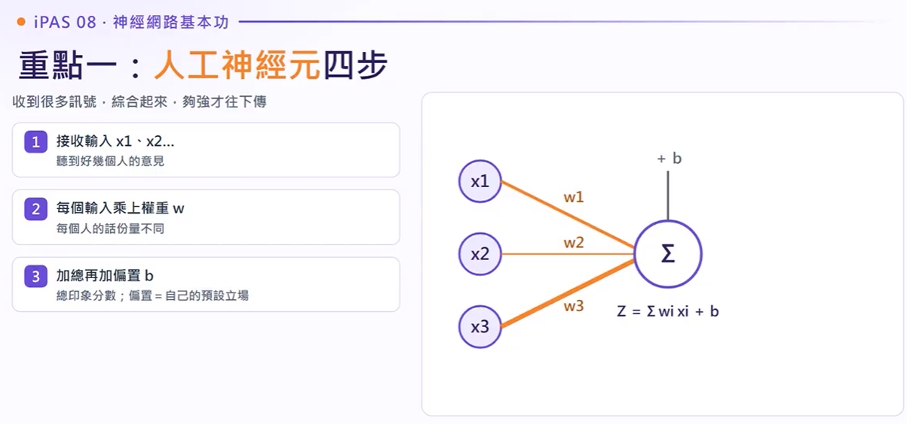
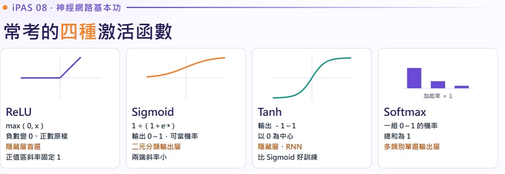
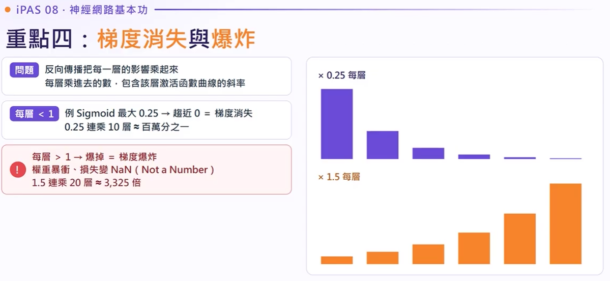
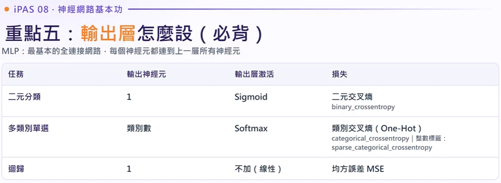

<!DOCTYPE html>
<html lang="zh-TW" class="scroll-smooth">
<head>
  <meta charset="UTF-8">
  <meta name="viewport" content="width=device-width, initial-scale=1.0">
  <title>EP08.神經網路基本功｜帶你看懂激活函數、反向傳播和輸出層</title>
  <script src="https://cdn.tailwindcss.com"></script>
  <link rel="preconnect" href="https://fonts.googleapis.com">
  <link rel="preconnect" href="https://fonts.gstatic.com" crossorigin>
  <link href="https://fonts.googleapis.com/css2?family=Inter:wght@300;400;500;600;700;800&family=Noto+Sans+TC:wght@300;400;500;700;900&family=JetBrains+Mono:wght@400;600&display=swap" rel="stylesheet">
  <script>
    tailwind.config = {
      darkMode: 'class',
      theme: {
        extend: {
          fontFamily: {
            sans: ['Inter', 'Noto Sans TC', 'sans-serif'],
            mono: ['JetBrains Mono', 'monospace'],
          },
          colors: {
            brand: {
              50: '#f0f7ff',
              100: '#e0effe',
              500: '#0284c7',
              600: '#0369a1',
              700: '#075985',
              900: '#0c4a6e',
            }
          }
        }
      }
    }
  </script>
  <style>
    .math-font { font-family: 'JetBrains Mono', monospace; }
    .glass-card {
      background: rgba(255, 255, 255, 0.85);
      backdrop-filter: blur(12px);
      border: 1px solid rgba(226, 232, 240, 0.8);
    }
    .dark .glass-card {
      background: rgba(15, 23, 42, 0.85);
      border: 1px solid rgba(51, 65, 85, 0.8);
    }
  </style>
  <!-- KaTeX 數學公式支援 -->
  <link rel="stylesheet" href="https://cdn.jsdelivr.net/npm/katex@0.16.8/dist/katex.min.css">
  <script defer src="https://cdn.jsdelivr.net/npm/katex@0.16.8/dist/katex.min.js"></script>
  <script defer src="https://cdn.jsdelivr.net/npm/katex@0.16.8/dist/contrib/auto-render.min.js"></script>
</head>
<body class="bg-slate-50 dark:bg-slate-950 text-slate-800 dark:text-slate-100 font-sans antialiased selection:bg-sky-500 selection:text-white transition-colors duration-200">

  <!-- 頂部導航 -->
  <header class="sticky top-0 z-50 glass-card border-b border-slate-200 dark:border-slate-800 shadow-sm">
    <div class="max-w-7xl mx-auto px-4 sm:px-6 lg:px-8 h-16 flex items-center justify-between">
      <div class="flex items-center gap-3">
        <span class="inline-flex items-center justify-center w-9 h-9 rounded-xl bg-gradient-to-tr from-sky-600 to-indigo-600 text-white font-bold text-sm shadow-md shadow-sky-500/20">
          EP08
        </span>
        <h1 class="text-base sm:text-lg font-bold tracking-tight text-slate-900 dark:text-white truncate max-w-[240px] sm:max-w-md lg:max-w-xl">
          神經網路基本功｜帶你看懂激活函數、反向傳播和輸出層
        </h1>
      </div>
      <div class="flex items-center gap-2">
        <a href="#quiz-section" class="px-3.5 py-1.5 rounded-lg text-xs font-semibold bg-sky-600 hover:bg-sky-500 text-white transition-all shadow-sm">
          隨堂實戰測驗
        </a>
      </div>
    </div>
  </header>

  <!-- 主容器 -->
  <main class="max-w-7xl mx-auto px-4 sm:px-6 lg:px-8 py-8 sm:py-12 space-y-16">

    <!-- 00. 一句話簡介與 Hero 區域 -->
    <section class="text-center max-w-4xl mx-auto space-y-4">
      <div class="inline-flex items-center gap-2 px-3 py-1 rounded-full text-xs font-medium bg-sky-100 dark:bg-sky-950 text-sky-700 dark:text-sky-300 border border-sky-200 dark:border-sky-800">
        <span class="w-2 h-2 rounded-full bg-sky-500 animate-pulse"></span>
        第九章 韋哥 · 中級科目三 ｜ iPAS AI應用規劃師 系列核心考點
      </div>
      <h2 class="text-3xl sm:text-4xl lg:text-5xl font-black text-slate-900 dark:text-white tracking-tight leading-tight">
        神經網路基本功：從單個神經元到深度學習架構
      </h2>
      <p class="text-lg sm:text-xl text-slate-600 dark:text-slate-300 font-normal leading-relaxed">
        深度學習所有神級模型（CNN、RNN、Transformer）都是由同一套零件組裝而成。搞懂「加權求和、非線性激活、反向連鎖導函數」的物理機制，考試與實戰皆能迎刃而解！
      </p>

      <!-- 快速口訣卡 -->
      <div class="grid grid-cols-1 md:grid-cols-3 gap-4 pt-4 text-left">
        <div class="p-4 rounded-xl border border-sky-300 dark:border-sky-800 bg-sky-50/70 dark:bg-sky-950/40">
          <p class="text-xs font-bold text-sky-700 dark:text-sky-300 uppercase tracking-wider mb-1">🔑 激活首選</p>
          <p class="text-sm font-semibold text-slate-800 dark:text-slate-100">無非線性，萬層皆為單一直線！隱藏層首選 <span class="text-sky-600 font-mono font-bold">ReLU</span>。</p>
        </div>
        <div class="p-4 rounded-xl border border-indigo-300 dark:border-indigo-800 bg-indigo-50/70 dark:bg-indigo-950/40">
          <p class="text-xs font-bold text-indigo-700 dark:text-indigo-300 uppercase tracking-wider mb-1">⚡ 梯度傳播</p>
          <p class="text-sm font-semibold text-slate-800 dark:text-slate-100">連乘 &lt; 1 消失無聲；連乘 &gt; 1 數值爆炸變 <span class="text-red-500 font-mono font-bold">NaN</span>。</p>
        </div>
        <div class="p-4 rounded-xl border border-emerald-300 dark:border-emerald-800 bg-emerald-50/70 dark:bg-emerald-950/40">
          <p class="text-xs font-bold text-emerald-700 dark:text-emerald-300 uppercase tracking-wider mb-1">🎯 輸出配置</p>
          <p class="text-sm font-semibold text-slate-800 dark:text-slate-100">二選一配 Sigmoid，多選一配 Softmax，PyTorch 多分類直接輸出 Logits。</p>
        </div>
      </div>
    
      <!-- 8 大精華投影片快速索引導覽列 -->
      <div class="mt-8 p-4 sm:p-5 rounded-2xl glass-card border border-slate-200 dark:border-slate-800 shadow-md text-left">
        <div class="flex items-center justify-between text-xs font-bold text-slate-800 dark:text-slate-200 mb-2">
          <span class="flex items-center gap-2">
            <svg class="w-4 h-4 text-sky-500" fill="none" stroke="currentColor" viewBox="0 0 24 24"><path stroke-linecap="round" stroke-linejoin="round" stroke-width="2" d="M4 16l4.586-4.586a2 2 0 012.828 0L16 16m-2-2l1.586-1.586a2 2 0 012.828 0L20 14m-6-6h.01M6 20h12a2 2 0 002-2V6a2 2 0 00-2-2H6a2 2 0 00-2 2v12a2 2 0 002 2z"/></svg>
            <span>EP08 原片教學投影片快速導覽（共 8 張・不同顏色框標記・支援全螢幕放大與時間軸雙向連動）：</span>
          </span>
          <span class="text-[11px] text-slate-400 font-mono">點擊卡片跳轉</span>
        </div>
        <div class="grid grid-cols-2 sm:grid-cols-4 lg:grid-cols-8 gap-2 pt-1 text-xs font-medium">
          <a href="#slide-card-ep08-01" onclick="scrollToSlide('slide-card-ep08-01')" class="p-2 rounded-xl bg-indigo-50 hover:bg-indigo-100 dark:bg-indigo-950/60 dark:hover:bg-indigo-900/60 border border-indigo-200 dark:border-indigo-800 text-indigo-700 dark:text-indigo-300 transition text-center flex flex-col items-center">
            <span class="font-mono font-bold text-[10px] text-indigo-500">P.01 [00:49]</span>
            <span class="truncate w-full text-[11px]">神經元四步</span>
          </a>
          <a href="#slide-card-ep08-02" onclick="scrollToSlide('slide-card-ep08-02')" class="p-2 rounded-xl bg-sky-50 hover:bg-sky-100 dark:bg-sky-950/60 dark:hover:bg-sky-900/60 border border-sky-200 dark:border-sky-800 text-sky-700 dark:text-sky-300 transition text-center flex flex-col items-center">
            <span class="font-mono font-bold text-[10px] text-sky-500">P.02 [01:30]</span>
            <span class="truncate w-full text-[11px]">非線性激活</span>
          </a>
          <a href="#slide-card-ep08-03" onclick="scrollToSlide('slide-card-ep08-03')" class="p-2 rounded-xl bg-emerald-50 hover:bg-emerald-100 dark:bg-emerald-950/60 dark:hover:bg-emerald-900/60 border border-emerald-200 dark:border-emerald-800 text-emerald-700 dark:text-emerald-300 transition text-center flex flex-col items-center">
            <span class="font-mono font-bold text-[10px] text-emerald-500">P.03 [02:52]</span>
            <span class="truncate w-full text-[11px]">四大激活函數</span>
          </a>
          <a href="#slide-card-ep08-04" onclick="scrollToSlide('slide-card-ep08-04')" class="p-2 rounded-xl bg-purple-50 hover:bg-purple-100 dark:bg-purple-950/60 dark:hover:bg-purple-900/60 border border-purple-200 dark:border-purple-800 text-purple-700 dark:text-purple-300 transition text-center flex flex-col items-center">
            <span class="font-mono font-bold text-[10px] text-purple-500">P.04 [05:33]</span>
            <span class="truncate w-full text-[11px]">前向反向傳播</span>
          </a>
          <a href="#slide-card-ep08-05" onclick="scrollToSlide('slide-card-ep08-05')" class="p-2 rounded-xl bg-rose-50 hover:bg-rose-100 dark:bg-rose-950/60 dark:hover:bg-rose-900/60 border border-rose-200 dark:border-rose-800 text-rose-700 dark:text-rose-300 transition text-center flex flex-col items-center">
            <span class="font-mono font-bold text-[10px] text-rose-500">P.05 [07:03]</span>
            <span class="truncate w-full text-[11px]">梯度消失爆炸</span>
          </a>
          <a href="#slide-card-ep08-06" onclick="scrollToSlide('slide-card-ep08-06')" class="p-2 rounded-xl bg-blue-50 hover:bg-blue-100 dark:bg-blue-950/60 dark:hover:bg-blue-900/60 border border-blue-200 dark:border-blue-800 text-blue-700 dark:text-blue-300 transition text-center flex flex-col items-center">
            <span class="font-mono font-bold text-[10px] text-blue-500">P.06 [09:35]</span>
            <span class="truncate w-full text-[11px]">輸出層怎麼設</span>
          </a>
          <a href="#slide-card-ep08-07" onclick="scrollToSlide('slide-card-ep08-07')" class="p-2 rounded-xl bg-amber-50 hover:bg-amber-100 dark:bg-amber-950/60 dark:hover:bg-amber-900/60 border border-amber-200 dark:border-amber-800 text-amber-700 dark:text-amber-300 transition text-center flex flex-col items-center">
            <span class="font-mono font-bold text-[10px] text-amber-500">P.07 [11:56]</span>
            <span class="truncate w-full text-[11px]">最容易搞混</span>
          </a>
          <a href="#slide-card-ep08-08" onclick="scrollToSlide('slide-card-ep08-08')" class="p-2 rounded-xl bg-yellow-50 hover:bg-yellow-100 dark:bg-yellow-950/60 dark:hover:bg-yellow-900/60 border border-yellow-200 dark:border-yellow-800 text-yellow-700 dark:text-yellow-300 transition text-center flex flex-col items-center">
            <span class="font-mono font-bold text-[10px] text-yellow-600 dark:text-yellow-400">P.08 [13:36]</span>
            <span class="truncate w-full text-[11px]">帶走三句話</span>
          </a>
        </div>
      </div>

    </section>

    <!-- 01 & 02. 感知器極限 + XOR 互動 + 生活比喻 -->
    <section class="space-y-6">
      <div class="flex items-center gap-3">
        <span class="w-8 h-8 rounded-lg bg-sky-500/10 text-sky-600 font-bold flex items-center justify-center text-sm border border-sky-500/20">01</span>
        <h3 class="text-2xl font-bold tracking-tight text-slate-900 dark:text-white">由來與感知器極限 (XOR 危機)</h3>

      <!-- 投影片 SLIDE-CARD-EP08-02 卡片 (天空藍框) -->
      <div id="slide-card-ep08-02" class="my-6 relative group overflow-hidden rounded-2xl border-2 border-sky-500 bg-sky-50/50 dark:bg-sky-950/40 p-4 sm:p-5 transition-all duration-300 shadow-md shadow-sky-500/10 hover:shadow-lg hover:shadow-sky-500/20">
        <div class="flex items-center justify-between pb-3 border-b border-sky-200 dark:border-sky-900/60 mb-3">
          <div class="flex items-center gap-2">
            <span class="px-2.5 py-0.5 rounded text-xs font-bold border bg-sky-100 text-sky-700 dark:bg-sky-900/60 dark:text-sky-300 border-sky-300 dark:border-sky-700 flex items-center gap-1.5">
              <svg class="w-3.5 h-3.5 inline" fill="none" stroke="currentColor" viewBox="0 0 24 24"><path stroke-linecap="round" stroke-linejoin="round" stroke-width="2" d="M13 10V3L4 14h7v7l9-11h-7z"/></svg>
              投影片 02
            </span>
            <span class="text-xs sm:text-sm font-bold text-slate-800 dark:text-slate-100">重點二：為什麼要非線性激活（打破線性堆疊限制）</span>
          </div>
          <div class="flex items-center gap-2">
            <button onclick="scrollToTimelineItem('timeline-item-2')" class="px-2.5 py-1 text-xs font-mono font-bold rounded-lg bg-sky-100 dark:bg-sky-900/60 text-sky-700 dark:text-sky-300 border border-sky-300 dark:border-sky-700 hover:bg-sky-200 transition cursor-pointer flex items-center gap-1" title="跳轉至時間軸逐字稿">
              <svg class="w-3 h-3" fill="none" stroke="currentColor" viewBox="0 0 24 24"><path stroke-linecap="round" stroke-linejoin="round" stroke-width="2" d="M12 8v4l3 3m6-3a9 9 0 11-18 0 9 9 0 0118 0z"/></svg>
              [00:01:30]
            </button>
            <button onclick="openLightbox('EP08/EP8-02.png', '重點二：為什麼要非線性激活', '[00:01:30]', 'timeline-item-2')" class="inline-flex items-center gap-1 text-xs text-slate-500 hover:text-sky-600 dark:hover:text-sky-300 font-semibold transition px-2 py-1 rounded hover:bg-white/80 dark:hover:bg-slate-800 cursor-pointer" title="點擊全螢幕放大">
              <svg class="w-3.5 h-3.5" fill="none" stroke="currentColor" viewBox="0 0 24 24"><path stroke-linecap="round" stroke-linejoin="round" stroke-width="2" d="M21 21l-6-6m2-5a7 7 0 11-14 0 7 7 0 0114 0zM10 7v6m3-3H7"/></svg>
              <span class="hidden sm:inline">放大</span>
            </button>
          </div>
        </div>
        <div class="overflow-hidden rounded-xl bg-slate-900 border border-slate-200/50 dark:border-slate-800 shadow-inner group/img relative cursor-pointer" onclick="openLightbox('EP08/EP8-02.png', '重點二：為什麼要非線性激活', '[00:01:30]', 'timeline-item-2')">
          
          <div class="absolute inset-0 bg-slate-900/0 group-hover/img:bg-slate-900/20 transition-colors flex items-center justify-center">
            <span class="opacity-0 group-hover/img:opacity-100 transition-opacity bg-slate-900/90 text-white text-xs font-bold px-3 py-1.5 rounded-full backdrop-blur-sm shadow border border-sky-500/50 flex items-center gap-1.5">
              <svg class="w-4 h-4 text-sky-400" fill="none" stroke="currentColor" viewBox="0 0 24 24"><path stroke-linecap="round" stroke-linejoin="round" stroke-width="2" d="M15 12a3 3 0 11-6 0 3 3 0 016 0z"/><path stroke-linecap="round" stroke-linejoin="round" stroke-width="2" d="M2.458 12C3.732 7.943 7.523 5 12 5c4.478 0 8.268 2.943 9.542 7-1.274 4.057-5.064 7-9.542 7-4.477 0-8.268-2.943-9.542-7z"/></svg>
              點擊全螢幕放大
            </span>
          </div>
        </div>
        <div class="mt-3 text-xs sm:text-sm text-slate-700 dark:text-slate-300 leading-relaxed bg-white/90 dark:bg-slate-900/80 p-3 rounded-xl border border-slate-100 dark:border-sky-900/40">
          <strong class="text-sky-600 dark:text-sky-400">【核心觀念：線性疊加本質仍為線性】</strong><br>
          • 每一層乘權重再相加是線性運算；線性疊線性（如 $	imes 2 
ightarrow 	imes 3 = 	imes 6$），<b>一層就做得到</b>！<br>
          • <b>警示</b>：若無激活函數，即使堆疊十層、百層網路，效果仍完全等同於單層感知器！<br>
          • <b>解決方案</b>：加入非線性激活 $
ightarrow$ 才能在決策空間彎出複雜多維分界線，學會影像與語音特徵。
        </div>
      </div>

      </div>

      <div class="grid grid-cols-1 lg:grid-cols-12 gap-8 items-start">
        <div class="lg:col-span-6 space-y-4 text-slate-600 dark:text-slate-300 text-sm leading-relaxed">
          <p>
            1957 年 Frank Rosenblatt 提出的<strong>感知器（Perceptron）</strong>是最早的人工神經元模型。它使用硬性階躍函數（Step Function），加總大於 0 就輸出 1，否則輸出 0。
          </p>
          <p>
            感知器的本質是在特徵空間中劃出<strong>「一條直線（超平面）」</strong>。因此它能輕鬆解決邏輯 AND、OR 問題，但遇上了 <strong>XOR（互斥或）</strong> 問題便徹底癱瘓：當輸入相同輸出 0、輸入不同輸出 1 時，四個資料點呈對角交叉分佈，任何單一直線都無法將兩者分開！
          </p>
          <div class="p-4 rounded-xl border-l-4 border-amber-500 bg-amber-50 dark:bg-amber-950/40 text-amber-900 dark:text-amber-200">
            <h4 class="font-bold flex items-center gap-1.5 text-sm mb-1">
              💡 破解之道：多層感知器 (MLP)
            </h4>
            <p class="text-xs leading-relaxed">
              必須加入<strong>至少一層隱藏層</strong>並搭配<strong>非線性激活函數</strong>。隱藏層的各神經元各自畫出直線，由輸出層組合出凸多邊形區域，打破直線局限。
            </p>
          </div>
        </div>

        <!-- 互動 SVG：XOR 與直線無法切分驗證 -->
        <div class="lg:col-span-6 p-5 rounded-2xl glass-card border border-slate-200 dark:border-slate-800 shadow-sm">
          <div class="flex items-center justify-between mb-3">
            <h4 class="text-sm font-bold text-slate-800 dark:text-slate-200">互動實證：單條直線能否切分 XOR？</h4>
            <span class="text-xs text-slate-500">拖曳滑桿旋轉直線</span>
          </div>

          <div class="relative w-full aspect-video bg-white dark:bg-slate-900 rounded-xl overflow-hidden border border-slate-200 dark:border-slate-800 flex items-center justify-center p-4">
            <svg id="xor-svg" viewBox="0 0 400 240" class="w-full h-full max-w-md select-none">
              <!-- 坐標軸網格 -->
              <line x1="50" y1="20" x2="50" y2="210" stroke="#cbd5e1" stroke-width="1.5" />
              <line x1="40" y1="200" x2="360" y2="200" stroke="#cbd5e1" stroke-width="1.5" />
              <text x="365" y="204" class="text-[11px] fill-slate-400 font-mono">x1</text>
              <text x="45" y="16" class="text-[11px] fill-slate-400 font-mono">x2</text>

              <!-- 資料點 (0,0)=0, (1,0)=1, (0,1)=1, (1,1)=0 -->
              <!-- 坐標映射: x0=90, x1=290; y0=160, y1=40 -->
              <!-- (0,0) Class 0 -->
              <circle cx="90" cy="160" r="10" fill="#ef4444" />
              <text x="90" y="164" text-anchor="middle" class="text-[10px] font-bold fill-white">0</text>
              <text x="90" y="185" text-anchor="middle" class="text-[10px] fill-slate-500 font-mono">(0,0)</text>

              <!-- (1,1) Class 0 -->
              <circle cx="290" cy="40" r="10" fill="#ef4444" />
              <text x="290" y="44" text-anchor="middle" class="text-[10px] font-bold fill-white">0</text>
              <text x="290" y="25" text-anchor="middle" class="text-[10px] fill-slate-500 font-mono">(1,1)</text>

              <!-- (1,0) Class 1 -->
              <circle cx="290" cy="160" r="10" fill="#0284c7" />
              <text x="290" y="164" text-anchor="middle" class="text-[10px] font-bold fill-white">1</text>
              <text x="290" y="185" text-anchor="middle" class="text-[10px] fill-slate-500 font-mono">(1,0)</text>

              <!-- (0,1) Class 1 -->
              <circle cx="90" cy="40" r="10" fill="#0284c7" />
              <text x="90" y="44" text-anchor="middle" class="text-[10px] font-bold fill-white">1</text>
              <text x="90" y="25" text-anchor="middle" class="text-[10px] fill-slate-500 font-mono">(0,1)</text>

              <!-- 動態直線 -->
              <line id="decision-line" x1="40" y1="100" x2="340" y2="100" stroke="#f59e0b" stroke-width="3" stroke-dasharray="5,4" />
            </svg>
          </div>

          <div class="mt-4 flex items-center gap-4">
            <label for="xor-angle" class="text-xs font-semibold text-slate-600 dark:text-slate-300 whitespace-nowrap">旋轉切分線角度：</label>
            <input id="xor-angle" type="range" min="0" max="180" value="45" class="w-full h-2 bg-slate-200 dark:bg-slate-700 rounded-lg appearance-none cursor-pointer accent-amber-500">
            <span id="xor-angle-val" class="text-xs font-mono font-bold text-amber-600 w-12 text-right">45°</span>
          </div>
          <p id="xor-status" class="mt-2 text-xs text-center font-medium text-red-500 dark:text-red-400 bg-red-50 dark:bg-red-950/50 py-1.5 rounded-lg border border-red-200 dark:border-red-900">
            ❌ 無法分開！紅點 (0) 與 藍點 (1) 永遠無法被單一直線完全隔開。
          </p>
        </div>
      </div>
    </section>

    <!-- 02 & 03. 生活化例子與工業應用 -->
    <section class="grid grid-cols-1 md:grid-cols-2 gap-6">
      <!-- 生活比喻 -->
      <div class="p-6 rounded-2xl border border-slate-200 dark:border-slate-800 glass-card">
        <div class="flex items-center gap-3 mb-3">
          <div class="w-8 h-8 rounded-lg bg-emerald-500/10 text-emerald-600 font-bold flex items-center justify-center text-sm border border-emerald-500/20">02</div>
          <h3 class="text-lg font-bold text-slate-900 dark:text-white">生活化比喻：評審打分數與傳話遊戲</h3>
        </div>
        <div class="space-y-3 text-sm text-slate-600 dark:text-slate-300 leading-relaxed">
          <p>
            <strong>人工神經元 = 主任評審決策：</strong><br>
            面試時有兩位副評審給出評價（輸入 $x_1, x_2$），主任給他們不同信任程度（權重 $w_1, w_2$）。主任心中自己也有預設立場或門檻（偏置 Bias）。最後加權總分再通過「是否錄取門檻」（激活函數），決定最後發聲大小。
          </p>
          <p>
            <strong>梯度傳播 = 傳話遊戲：</strong><br>
            前向傳播像「考試寫答案」，反向傳播像「老師發考卷檢討訂正」。如果隊伍排了 50 個人，每個人轉述時都打了 2 折（Sigmoid 斜率 $\le 0.25$），傳到最前面的人那裡已經完全聽不見任何聲音（<strong>梯度消失</strong>）。
          </p>
        </div>
      </div>

      <!-- 工業應用 -->
      <div class="p-6 rounded-2xl border border-slate-200 dark:border-slate-800 glass-card">
        <div class="flex items-center gap-3 mb-3">
          <div class="w-8 h-8 rounded-lg bg-sky-500/10 text-sky-600 font-bold flex items-center justify-center text-sm border border-sky-500/20">03</div>
          <h3 class="text-lg font-bold text-slate-900 dark:text-white">工業實務：晶圓與面板外觀刮痕檢測</h3>
        </div>
        <div class="space-y-3 text-sm text-slate-600 dark:text-slate-300 leading-relaxed">
          <p>
            在智慧製造生產線（如面板廠、半導體晶圓封裝），相機以高解析度拍攝產品照片判斷「刮痕、髒污、破片」等瑕疵。
          </p>
          <div class="p-3.5 rounded-xl bg-slate-100 dark:bg-slate-900 text-xs text-slate-700 dark:text-slate-300 border border-slate-200 dark:border-slate-800">
            <strong>❌ 常見致命錯誤：</strong> 工程師若在模型每層都配置線性激活函數，不管串接多少層卷積或全連接層，數學上等同於「單層線性迴歸」，無法描繪彎曲、複雜分佈的微型刮痕特徵，準確率長期停滯！必須換成 <strong>ReLU</strong>。
          </div>
        </div>
      </div>
    </section>

    <!-- 04 & 05-A. 人工神經元架構與動態計算機 -->
    <section class="space-y-6">
      <div class="flex items-center gap-3">
        <span class="w-8 h-8 rounded-lg bg-sky-500/10 text-sky-600 font-bold flex items-center justify-center text-sm border border-sky-500/20">04</span>
        <h3 class="text-2xl font-bold tracking-tight text-slate-900 dark:text-white">理論架構：人工神經元四步驟與計算機</h3>

      <!-- 投影片 SLIDE-CARD-EP08-01 卡片 (藍紫框) -->
      <div id="slide-card-ep08-01" class="my-6 relative group overflow-hidden rounded-2xl border-2 border-indigo-500 bg-indigo-50/50 dark:bg-indigo-950/40 p-4 sm:p-5 transition-all duration-300 shadow-md shadow-indigo-500/10 hover:shadow-lg hover:shadow-indigo-500/20">
        <div class="flex items-center justify-between pb-3 border-b border-indigo-200 dark:border-indigo-900/60 mb-3">
          <div class="flex items-center gap-2">
            <span class="px-2.5 py-0.5 rounded text-xs font-bold border bg-indigo-100 text-indigo-700 dark:bg-indigo-900/60 dark:text-indigo-300 border-indigo-300 dark:border-indigo-700 flex items-center gap-1.5">
              <svg class="w-3.5 h-3.5 inline" fill="none" stroke="currentColor" viewBox="0 0 24 24"><path stroke-linecap="round" stroke-linejoin="round" stroke-width="2" d="M3 9a2 2 0 012-2h.93a2 2 0 001.664-.89l.812-1.22A2 2 0 0110.07 4h3.86a2 2 0 011.664.89l.812 1.22A2 2 0 0018.07 7H19a2 2 0 012 2v9a2 2 0 01-2 2H5a2 2 0 01-2-2V9z"/></svg>
              投影片 01
            </span>
            <span class="text-xs sm:text-sm font-bold text-slate-800 dark:text-slate-100">重點一：人工神經元四步（輸入、加權、偏置、激活）</span>
          </div>
          <div class="flex items-center gap-2">
            <button onclick="scrollToTimelineItem('timeline-item-2')" class="px-2.5 py-1 text-xs font-mono font-bold rounded-lg bg-indigo-100 dark:bg-indigo-900/60 text-indigo-700 dark:text-indigo-300 border border-indigo-300 dark:border-indigo-700 hover:bg-indigo-200 transition cursor-pointer flex items-center gap-1" title="跳轉至時間軸逐字稿">
              <svg class="w-3 h-3" fill="none" stroke="currentColor" viewBox="0 0 24 24"><path stroke-linecap="round" stroke-linejoin="round" stroke-width="2" d="M12 8v4l3 3m6-3a9 9 0 11-18 0 9 9 0 0118 0z"/></svg>
              [00:00:49]
            </button>
            <button onclick="openLightbox('EP08/EP8-01.png', '重點一：人工神經元四步', '[00:00:49]', 'timeline-item-2')" class="inline-flex items-center gap-1 text-xs text-slate-500 hover:text-indigo-600 dark:hover:text-indigo-300 font-semibold transition px-2 py-1 rounded hover:bg-white/80 dark:hover:bg-slate-800 cursor-pointer" title="點擊全螢幕放大">
              <svg class="w-3.5 h-3.5" fill="none" stroke="currentColor" viewBox="0 0 24 24"><path stroke-linecap="round" stroke-linejoin="round" stroke-width="2" d="M21 21l-6-6m2-5a7 7 0 11-14 0 7 7 0 0114 0zM10 7v6m3-3H7"/></svg>
              <span class="hidden sm:inline">放大</span>
            </button>
          </div>
        </div>
        <div class="overflow-hidden rounded-xl bg-slate-900 border border-slate-200/50 dark:border-slate-800 shadow-inner group/img relative cursor-pointer" onclick="openLightbox('EP08/EP8-01.png', '重點一：人工神經元四步', '[00:00:49]', 'timeline-item-2')">
          
          <div class="absolute inset-0 bg-slate-900/0 group-hover/img:bg-slate-900/20 transition-colors flex items-center justify-center">
            <span class="opacity-0 group-hover/img:opacity-100 transition-opacity bg-slate-900/90 text-white text-xs font-bold px-3 py-1.5 rounded-full backdrop-blur-sm shadow border border-indigo-500/50 flex items-center gap-1.5">
              <svg class="w-4 h-4 text-indigo-400" fill="none" stroke="currentColor" viewBox="0 0 24 24"><path stroke-linecap="round" stroke-linejoin="round" stroke-width="2" d="M15 12a3 3 0 11-6 0 3 3 0 016 0z"/><path stroke-linecap="round" stroke-linejoin="round" stroke-width="2" d="M2.458 12C3.732 7.943 7.523 5 12 5c4.478 0 8.268 2.943 9.542 7-1.274 4.057-5.064 7-9.542 7-4.477 0-8.268-2.943-9.542-7z"/></svg>
              點擊全螢幕放大
            </span>
          </div>
        </div>
        <div class="mt-3 text-xs sm:text-sm text-slate-700 dark:text-slate-300 leading-relaxed bg-white/90 dark:bg-slate-900/80 p-3 rounded-xl border border-slate-100 dark:border-indigo-900/40">
          <strong class="text-indigo-600 dark:text-indigo-400">【人工神經元運算四步速記】</strong> 收到很多訊號，綜合起來夠強才往下傳：<br>
          ① <b>接收輸入</b> $x_1, x_2...$（聽到好幾個人的意見）<br>
          ② <b>乘上權重</b> $w$（每個人的話份量不同）<br>
          ③ <b>加總再加偏置</b> $b$：$Z = \sum w_i x_i + b$（總印象分數；偏置 = 自己的預設立場）<br>
          ④ <b>通過激活函數</b>：決定要不要發言、說多大聲。
        </div>
      </div>

      </div>

      <div class="grid grid-cols-1 lg:grid-cols-12 gap-8 items-center">
        <!-- 理論公式說明 -->
        <div class="lg:col-span-5 space-y-4 text-sm text-slate-600 dark:text-slate-300">
          <p>人工神經元包含四個核心算子：</p>
          <ol class="list-decimal pl-5 space-y-2">
            <li><strong>接收輸入 ($x$)</strong>：特徵或上一層的訊號。</li>
            <li><strong>乘上權重 ($w$)</strong>：調節各特徵的重要性權限。</li>
            <li><strong>求和並加偏置 ($b$)</strong>：偏置讓輸入為 0 時仍具基準觸發值。
              <div class="p-2 rounded bg-slate-100 dark:bg-slate-900 font-mono text-xs text-sky-600 dark:text-sky-400 mt-1">
                $$z = \sum (x_i \cdot w_i) + b = x_1 w_1 + x_2 w_2 + b$$
              </div>
            </li>
            <li><strong>激活函數 ($f$)</strong>：將線性總和 $z$ 轉換為非線性輸出 $a = f(z)$。</li>
          </ol>
        </div>

        <!-- 互動神經元計算機 -->
        <div class="lg:col-span-7 p-6 rounded-2xl glass-card border border-slate-200 dark:border-slate-800 shadow-md">
          <h4 class="text-base font-bold text-slate-900 dark:text-white mb-4 flex items-center justify-between">
            <span>🧮 互動神經元實時運算器</span>
            <span class="text-xs font-normal text-slate-500">官方試題數據實測</span>
          </h4>

          <div class="grid grid-cols-2 sm:grid-cols-3 gap-3 text-xs mb-5">
            <div>
              <label class="block text-slate-500 mb-1 font-mono">輸入 x1</label>
              <input id="neuron-x1" type="number" step="0.1" value="1.0" class="w-full px-2.5 py-1.5 rounded-lg border dark:border-slate-700 bg-white dark:bg-slate-900 font-mono text-slate-900 dark:text-white">
            </div>
            <div>
              <label class="block text-slate-500 mb-1 font-mono">權重 w1</label>
              <input id="neuron-w1" type="number" step="0.1" value="0.6" class="w-full px-2.5 py-1.5 rounded-lg border dark:border-slate-700 bg-white dark:bg-slate-900 font-mono text-slate-900 dark:text-white">
            </div>
            <div>
              <label class="block text-slate-500 mb-1 font-mono">輸入 x2</label>
              <input id="neuron-x2" type="number" step="0.1" value="0.0" class="w-full px-2.5 py-1.5 rounded-lg border dark:border-slate-700 bg-white dark:bg-slate-900 font-mono text-slate-900 dark:text-white">
            </div>
            <div>
              <label class="block text-slate-500 mb-1 font-mono">權重 w2</label>
              <input id="neuron-w2" type="number" step="0.1" value="0.3" class="w-full px-2.5 py-1.5 rounded-lg border dark:border-slate-700 bg-white dark:bg-slate-900 font-mono text-slate-900 dark:text-white">
            </div>
            <div>
              <label class="block text-slate-500 mb-1 font-mono">偏置 b</label>
              <input id="neuron-b" type="number" step="0.1" value="-0.5" class="w-full px-2.5 py-1.5 rounded-lg border dark:border-slate-700 bg-white dark:bg-slate-900 font-mono text-slate-900 dark:text-white">
            </div>
            <div>
              <label class="block text-slate-500 mb-1 font-mono">激活函數 f</label>
              <select id="neuron-act" class="w-full px-2 py-1.5 rounded-lg border dark:border-slate-700 bg-white dark:bg-slate-900 font-mono text-slate-900 dark:text-white">
                <option value="relu">ReLU</option>
                <option value="sigmoid">Sigmoid</option>
                <option value="step">階躍 Step</option>
              </select>
            </div>
          </div>

          <!-- 計算流步步呈現 -->
          <div class="p-4 rounded-xl bg-slate-100 dark:bg-slate-900/90 font-mono text-xs space-y-2 border border-slate-200 dark:border-slate-800">
            <div class="flex justify-between items-center text-slate-600 dark:text-slate-400">
              <span>加權和公式:</span>
              <span>z = (x1 · w1) + (x2 · w2) + b</span>
            </div>
            <div class="flex justify-between items-center text-sky-600 dark:text-sky-400 font-bold">
              <span>數值代入:</span>
              <span id="calc-step-text">(1.0 × 0.6) + (0.0 × 0.3) + (-0.5) = 0.10</span>
            </div>
            <div class="pt-2 border-t border-slate-200 dark:border-slate-800 flex justify-between items-center text-emerald-600 dark:text-emerald-400 text-sm font-bold">
              <span>輸出 Output a = f(z):</span>
              <span id="calc-out-text" class="text-base">0.1000</span>
            </div>
          </div>
        </div>
      </div>
    </section>

    <!-- 05-B. 激活函數四大天王互動曲線 -->
    <section class="space-y-6">
      <div class="flex items-center gap-3">
        <span class="w-8 h-8 rounded-lg bg-sky-500/10 text-sky-600 font-bold flex items-center justify-center text-sm border border-sky-500/20">05</span>
        <h3 class="text-2xl font-bold tracking-tight text-slate-900 dark:text-white">激活函數互動實驗室 (ReLU / Sigmoid / Tanh / Softmax)</h3>

      <!-- 投影片 SLIDE-CARD-EP08-03 卡片 (翡翠綠框) -->
      <div id="slide-card-ep08-03" class="my-6 relative group overflow-hidden rounded-2xl border-2 border-emerald-500 bg-emerald-50/50 dark:bg-emerald-950/40 p-4 sm:p-5 transition-all duration-300 shadow-md shadow-emerald-500/10 hover:shadow-lg hover:shadow-emerald-500/20">
        <div class="flex items-center justify-between pb-3 border-b border-emerald-200 dark:border-emerald-900/60 mb-3">
          <div class="flex items-center gap-2">
            <span class="px-2.5 py-0.5 rounded text-xs font-bold border bg-emerald-100 text-emerald-700 dark:bg-emerald-900/60 dark:text-emerald-300 border-emerald-300 dark:border-emerald-700 flex items-center gap-1.5">
              <svg class="w-3.5 h-3.5 inline" fill="none" stroke="currentColor" viewBox="0 0 24 24"><path stroke-linecap="round" stroke-linejoin="round" stroke-width="2" d="M9 19v-6a2 2 0 00-2-2H5a2 2 0 00-2 2v6a2 2 0 002 2h2a2 2 0 002-2zm0 0V9a2 2 0 012-2h2a2 2 0 012 2v10m-6 0a2 2 0 002 2h2a2 2 0 002-2m0 0V5a2 2 0 012-2h2a2 2 0 012 2v14a2 2 0 01-2 2h-2a2 2 0 01-2-2z"/></svg>
              投影片 03
            </span>
            <span class="text-xs sm:text-sm font-bold text-slate-800 dark:text-slate-100">常考的四種激活函數（ReLU / Sigmoid / Tanh / Softmax）</span>
          </div>
          <div class="flex items-center gap-2">
            <button onclick="scrollToTimelineItem('timeline-item-3')" class="px-2.5 py-1 text-xs font-mono font-bold rounded-lg bg-emerald-100 dark:bg-emerald-900/60 text-emerald-700 dark:text-emerald-300 border border-emerald-300 dark:border-emerald-700 hover:bg-emerald-200 transition cursor-pointer flex items-center gap-1" title="跳轉至時間軸逐字稿">
              <svg class="w-3 h-3" fill="none" stroke="currentColor" viewBox="0 0 24 24"><path stroke-linecap="round" stroke-linejoin="round" stroke-width="2" d="M12 8v4l3 3m6-3a9 9 0 11-18 0 9 9 0 0118 0z"/></svg>
              [00:02:52]
            </button>
            <button onclick="openLightbox('EP08/EP8-03.png', '常考的四種激活函數', '[00:02:52]', 'timeline-item-3')" class="inline-flex items-center gap-1 text-xs text-slate-500 hover:text-emerald-600 dark:hover:text-emerald-300 font-semibold transition px-2 py-1 rounded hover:bg-white/80 dark:hover:bg-slate-800 cursor-pointer" title="點擊全螢幕放大">
              <svg class="w-3.5 h-3.5" fill="none" stroke="currentColor" viewBox="0 0 24 24"><path stroke-linecap="round" stroke-linejoin="round" stroke-width="2" d="M21 21l-6-6m2-5a7 7 0 11-14 0 7 7 0 0114 0zM10 7v6m3-3H7"/></svg>
              <span class="hidden sm:inline">放大</span>
            </button>
          </div>
        </div>
        <div class="overflow-hidden rounded-xl bg-slate-900 border border-slate-200/50 dark:border-slate-800 shadow-inner group/img relative cursor-pointer" onclick="openLightbox('EP08/EP8-03.png', '常考的四種激活函數', '[00:02:52]', 'timeline-item-3')">
          
          <div class="absolute inset-0 bg-slate-900/0 group-hover/img:bg-slate-900/20 transition-colors flex items-center justify-center">
            <span class="opacity-0 group-hover/img:opacity-100 transition-opacity bg-slate-900/90 text-white text-xs font-bold px-3 py-1.5 rounded-full backdrop-blur-sm shadow border border-emerald-500/50 flex items-center gap-1.5">
              <svg class="w-4 h-4 text-emerald-400" fill="none" stroke="currentColor" viewBox="0 0 24 24"><path stroke-linecap="round" stroke-linejoin="round" stroke-width="2" d="M15 12a3 3 0 11-6 0 3 3 0 016 0z"/><path stroke-linecap="round" stroke-linejoin="round" stroke-width="2" d="M2.458 12C3.732 7.943 7.523 5 12 5c4.478 0 8.268 2.943 9.542 7-1.274 4.057-5.064 7-9.542 7-4.477 0-8.268-2.943-9.542-7z"/></svg>
              點擊全螢幕放大
            </span>
          </div>
        </div>
        <div class="mt-3 text-xs sm:text-sm text-slate-700 dark:text-slate-300 leading-relaxed bg-white/90 dark:bg-slate-900/80 p-3 rounded-xl border border-slate-100 dark:border-emerald-900/40">
          <strong class="text-emerald-600 dark:text-emerald-400">【四大激活函數特性橫向對比】</strong><br>
          • <b>ReLU</b>：$\max(0, x)$，負數歸零、正數維持原樣；<b>深層隱藏層首選</b>；正值區斜率恆為 1，不飽和！<br>
          • <b>Sigmoid</b>：$1/(1+e^{-x})$，輸出壓至 $0 \sim 1$；用於<b>二元分類輸出層</b>；致命傷：兩端飽和導致斜率極小（$\le 0.25$）。<br>
          • <b>Tanh</b>：輸出壓至 $-1 \sim 1$；<b>以 0 為中心 (Zero-centered)</b>，多用於 RNN 循環神經網路，比 Sigmoid 更易收斂。<br>
          • <b>Softmax</b>：輸出壓成一組機率值且<b>總和恆等於 1</b>；專用於<b>多類別單選輸出層</b>。
        </div>
      </div>

      </div>

      <div class="grid grid-cols-1 lg:grid-cols-12 gap-6">
        <!-- 控制與曲線繪製 -->
        <div class="lg:col-span-8 p-6 rounded-2xl glass-card border border-slate-200 dark:border-slate-800 shadow-sm flex flex-col justify-between">
          <div>
            <div class="flex flex-wrap items-center justify-between gap-3 mb-4">
              <div class="flex items-center gap-2">
                <button onclick="setActFunction('relu')" id="btn-relu" class="px-3 py-1.5 rounded-lg text-xs font-semibold bg-sky-600 text-white shadow">ReLU</button>
                <button onclick="setActFunction('sigmoid')" id="btn-sigmoid" class="px-3 py-1.5 rounded-lg text-xs font-semibold bg-slate-200 dark:bg-slate-800 text-slate-700 dark:text-slate-300">Sigmoid</button>
                <button onclick="setActFunction('tanh')" id="btn-tanh" class="px-3 py-1.5 rounded-lg text-xs font-semibold bg-slate-200 dark:bg-slate-800 text-slate-700 dark:text-slate-300">Tanh</button>
              </div>
              <span id="act-formula" class="text-xs font-mono font-bold text-sky-600 dark:text-sky-400">f(x) = max(0, x)</span>
            </div>

            <!-- SVG 函數曲線繪製 -->
            <div class="w-full h-56 bg-white dark:bg-slate-900 rounded-xl border border-slate-200 dark:border-slate-800 relative overflow-hidden flex items-center justify-center">
              <svg id="act-svg" viewBox="0 0 400 200" class="w-full h-full">
                <!-- 網格與軸 -->
                <line x1="0" y1="100" x2="400" y2="100" stroke="#94a3b8" stroke-width="1.2" stroke-dasharray="3,3" />
                <line x1="200" y1="0" x2="200" y2="200" stroke="#94a3b8" stroke-width="1.2" stroke-dasharray="3,3" />
                <text x="385" y="115" class="text-[10px] fill-slate-400 font-mono">z</text>
                <text x="205" y="15" class="text-[10px] fill-slate-400 font-mono">f(z)</text>

                <!-- 動態路徑 -->
                <path id="act-curve" d="" fill="none" stroke="#0284c7" stroke-width="3" stroke-linecap="round"/>
                <!-- 焦點指示點 -->
                <circle id="act-dot" cx="200" cy="100" r="5" fill="#ef4444" stroke="#ffffff" stroke-width="2"/>
                <!-- 切線指示 (斜率) -->
                <line id="act-tangent" x1="160" y1="100" x2="240" y2="100" stroke="#10b981" stroke-width="2" stroke-dasharray="4,2"/>
              </svg>
            </div>

            <div class="mt-4 flex items-center gap-4">
              <label for="act-input-slider" class="text-xs font-semibold text-slate-600 dark:text-slate-300 whitespace-nowrap">輸入 z 值：</label>
              <input id="act-input-slider" type="range" min="-6" max="6" step="0.1" value="1.0" class="w-full h-2 bg-slate-200 dark:bg-slate-700 rounded-lg appearance-none cursor-pointer accent-sky-600">
              <span id="act-slider-val" class="text-xs font-mono font-bold text-sky-600 w-10 text-right">1.0</span>
            </div>
          </div>

          <div class="grid grid-cols-2 gap-3 mt-4 text-xs font-mono">
            <div class="p-2.5 rounded-lg bg-sky-50 dark:bg-sky-950/60 border border-sky-200 dark:border-sky-900">
              <span class="text-slate-500 block">函數輸出 f(z)：</span>
              <span id="act-val-disp" class="text-sm font-bold text-sky-600 dark:text-sky-300">1.0000</span>
            </div>
            <div class="p-2.5 rounded-lg bg-emerald-50 dark:bg-emerald-950/60 border border-emerald-200 dark:border-emerald-900">
              <span class="text-slate-500 block">局部導數 (斜率/梯度)：</span>
              <span id="act-grad-disp" class="text-sm font-bold text-emerald-600 dark:text-emerald-300">1.0000</span>
            </div>
          </div>
        </div>

        <!-- 四大函數特徵速查卡 -->
        <div class="lg:col-span-4 space-y-3">
          <div class="p-3.5 rounded-xl border border-sky-200 dark:border-sky-900 bg-sky-50/50 dark:bg-sky-950/30">
            <div class="flex items-center justify-between">
              <span class="font-bold text-xs text-sky-800 dark:text-sky-200">ReLU (首選)</span>
              <span class="text-[10px] px-2 py-0.5 rounded bg-sky-200 dark:bg-sky-800 text-sky-800 dark:text-sky-200">隱藏層標配</span>
            </div>
            <p class="text-xs text-slate-600 dark:text-slate-300 mt-1">計算快、正區斜率恆為 1 有效抵禦梯度消失。缺點為輸入 &lt; 0 時死亡（Dying ReLU）。</p>
          </div>

          <div class="p-3.5 rounded-xl border border-amber-200 dark:border-amber-900 bg-amber-50/50 dark:bg-amber-950/30">
            <div class="flex items-center justify-between">
              <span class="font-bold text-xs text-amber-800 dark:text-amber-200">Sigmoid (二分類)</span>
              <span class="text-[10px] px-2 py-0.5 rounded bg-amber-200 dark:bg-amber-800 text-amber-800 dark:text-amber-200">輸出 [0, 1]</span>
            </div>
            <p class="text-xs text-slate-600 dark:text-slate-300 mt-1">將任意數值壓縮為機率值。兩端導數趨近 0（最大斜率僅 0.25），深層易梯度消失。</p>
          </div>

          <div class="p-3.5 rounded-xl border border-indigo-200 dark:border-indigo-900 bg-indigo-50/50 dark:bg-indigo-950/30">
            <div class="flex items-center justify-between">
              <span class="font-bold text-xs text-indigo-800 dark:text-indigo-200">Tanh (雙曲正切)</span>
              <span class="text-[10px] px-2 py-0.5 rounded bg-indigo-200 dark:bg-indigo-800 text-indigo-800 dark:text-indigo-200">輸出 [-1, 1]</span>
            </div>
            <p class="text-xs text-slate-600 dark:text-slate-300 mt-1">零中心對稱（Zero-centered），收斂比 Sigmoid 快，常在 RNN 隱藏層使用。</p>
          </div>

          <div class="p-3.5 rounded-xl border border-emerald-200 dark:border-emerald-900 bg-emerald-50/50 dark:bg-emerald-950/30">
            <div class="flex items-center justify-between">
              <span class="font-bold text-xs text-emerald-800 dark:text-emerald-200">Softmax (多分類)</span>
              <span class="text-[10px] px-2 py-0.5 rounded bg-emerald-200 dark:bg-emerald-800 text-emerald-800 dark:text-emerald-200">總和嚴格為 1</span>
            </div>
            <p class="text-xs text-slate-600 dark:text-slate-300 mt-1">將原始得分（Logits）轉為互斥的機率分佈 $\frac{e^{z_i}}{\sum e^{z_j}}$，多類別單選必用。</p>
          </div>
        </div>
      </div>
    </section>

    <!-- 05-C. 反向傳播連鎖律與梯度消失/爆炸模擬 -->
    <section class="space-y-6">
      <div class="flex items-center gap-3">
        <span class="w-8 h-8 rounded-lg bg-sky-500/10 text-sky-600 font-bold flex items-center justify-center text-sm border border-sky-500/20">05</span>
        <h3 class="text-2xl font-bold tracking-tight text-slate-900 dark:text-white">反向傳播連鎖律與「梯度消失 / 爆炸」模擬器</h3>

      <!-- 投影片 SLIDE-CARD-EP08-04 卡片 (紫色框) -->
      <div id="slide-card-ep08-04" class="my-6 relative group overflow-hidden rounded-2xl border-2 border-purple-500 bg-purple-50/50 dark:bg-purple-950/40 p-4 sm:p-5 transition-all duration-300 shadow-md shadow-purple-500/10 hover:shadow-lg hover:shadow-purple-500/20">
        <div class="flex items-center justify-between pb-3 border-b border-purple-200 dark:border-purple-900/60 mb-3">
          <div class="flex items-center gap-2">
            <span class="px-2.5 py-0.5 rounded text-xs font-bold border bg-purple-100 text-purple-700 dark:bg-purple-900/60 dark:text-purple-300 border-purple-300 dark:border-purple-700 flex items-center gap-1.5">
              <svg class="w-3.5 h-3.5 inline" fill="none" stroke="currentColor" viewBox="0 0 24 24"><path stroke-linecap="round" stroke-linejoin="round" stroke-width="2" d="M8 7h12m0 0l-4-4m4 4l-4 4m0 6H4m0 0l4 4m-4-4l4-4"/></svg>
              投影片 04
            </span>
            <span class="text-xs sm:text-sm font-bold text-slate-800 dark:text-slate-100">重點三：前向與反向傳播（連鎖律梯度回傳）</span>
          </div>
          <div class="flex items-center gap-2">
            <button onclick="scrollToTimelineItem('timeline-item-4')" class="px-2.5 py-1 text-xs font-mono font-bold rounded-lg bg-purple-100 dark:bg-purple-900/60 text-purple-700 dark:text-purple-300 border border-purple-300 dark:border-purple-700 hover:bg-purple-200 transition cursor-pointer flex items-center gap-1" title="跳轉至時間軸逐字稿">
              <svg class="w-3 h-3" fill="none" stroke="currentColor" viewBox="0 0 24 24"><path stroke-linecap="round" stroke-linejoin="round" stroke-width="2" d="M12 8v4l3 3m6-3a9 9 0 11-18 0 9 9 0 0118 0z"/></svg>
              [00:05:33]
            </button>
            <button onclick="openLightbox('EP08/EP8-04.png', '重點三：前向與反向傳播', '[00:05:33]', 'timeline-item-4')" class="inline-flex items-center gap-1 text-xs text-slate-500 hover:text-purple-600 dark:hover:text-purple-300 font-semibold transition px-2 py-1 rounded hover:bg-white/80 dark:hover:bg-slate-800 cursor-pointer" title="點擊全螢幕放大">
              <svg class="w-3.5 h-3.5" fill="none" stroke="currentColor" viewBox="0 0 24 24"><path stroke-linecap="round" stroke-linejoin="round" stroke-width="2" d="M21 21l-6-6m2-5a7 7 0 11-14 0 7 7 0 0114 0zM10 7v6m3-3H7"/></svg>
              <span class="hidden sm:inline">放大</span>
            </button>
          </div>
        </div>
        <div class="overflow-hidden rounded-xl bg-slate-900 border border-slate-200/50 dark:border-slate-800 shadow-inner group/img relative cursor-pointer" onclick="openLightbox('EP08/EP8-04.png', '重點三：前向與反向傳播', '[00:05:33]', 'timeline-item-4')">
          
          <div class="absolute inset-0 bg-slate-900/0 group-hover/img:bg-slate-900/20 transition-colors flex items-center justify-center">
            <span class="opacity-0 group-hover/img:opacity-100 transition-opacity bg-slate-900/90 text-white text-xs font-bold px-3 py-1.5 rounded-full backdrop-blur-sm shadow border border-purple-500/50 flex items-center gap-1.5">
              <svg class="w-4 h-4 text-purple-400" fill="none" stroke="currentColor" viewBox="0 0 24 24"><path stroke-linecap="round" stroke-linejoin="round" stroke-width="2" d="M15 12a3 3 0 11-6 0 3 3 0 016 0z"/><path stroke-linecap="round" stroke-linejoin="round" stroke-width="2" d="M2.458 12C3.732 7.943 7.523 5 12 5c4.478 0 8.268 2.943 9.542 7-1.274 4.057-5.064 7-9.542 7-4.477 0-8.268-2.943-9.542-7z"/></svg>
              點擊全螢幕放大
            </span>
          </div>
        </div>
        <div class="mt-3 text-xs sm:text-sm text-slate-700 dark:text-slate-300 leading-relaxed bg-white/90 dark:bg-slate-900/80 p-3 rounded-xl border border-slate-100 dark:border-purple-900/40">
          <strong class="text-purple-600 dark:text-purple-400">【模型訓練循環四部曲】</strong> 重複幾千幾萬次即為「深度學習訓練」：<br>
          ① <b>前向傳播</b>：一層一層算到輸出，得到預測（像寫考卷）<br>
          ② <b>計算損失</b>：計算預測與標籤答案差距多少（像對答案打分數）<br>
          ③ <b>反向傳播</b>：運用微積分連鎖律將誤差由後向前推導，算出各層權重梯度（像從錯的地方往前抓犯錯戰犯）<br>
          ④ <b>更新權重</b>：優化器沿梯度反方向調整權重：$w \leftarrow w - \eta \cdot rac{\partial L}{\partial w}$（像訂正作業，下次不再犯）。
        </div>
      </div>


      <!-- 投影片 SLIDE-CARD-EP08-05 卡片 (玫瑰紅框) -->
      <div id="slide-card-ep08-05" class="my-6 relative group overflow-hidden rounded-2xl border-2 border-rose-500 bg-rose-50/50 dark:bg-rose-950/40 p-4 sm:p-5 transition-all duration-300 shadow-md shadow-rose-500/10 hover:shadow-lg hover:shadow-rose-500/20">
        <div class="flex items-center justify-between pb-3 border-b border-rose-200 dark:border-rose-900/60 mb-3">
          <div class="flex items-center gap-2">
            <span class="px-2.5 py-0.5 rounded text-xs font-bold border bg-rose-100 text-rose-700 dark:bg-rose-900/60 dark:text-rose-300 border-rose-300 dark:border-rose-700 flex items-center gap-1.5">
              <svg class="w-3.5 h-3.5 inline" fill="none" stroke="currentColor" viewBox="0 0 24 24"><path stroke-linecap="round" stroke-linejoin="round" stroke-width="2" d="M12 9v2m0 4h.01m-6.938 4h13.856c1.54 0 2.502-1.667 1.732-3L13.732 4c-.77-1.333-2.694-1.333-3.464 0L3.34 16c-.77 1.333.192 3 1.732 3z"/></svg>
              投影片 05
            </span>
            <span class="text-xs sm:text-sm font-bold text-slate-800 dark:text-slate-100">重點四：梯度消失與爆炸（連乘效應深度剖析）</span>
          </div>
          <div class="flex items-center gap-2">
            <button onclick="scrollToTimelineItem('timeline-item-5')" class="px-2.5 py-1 text-xs font-mono font-bold rounded-lg bg-rose-100 dark:bg-rose-900/60 text-rose-700 dark:text-rose-300 border border-rose-300 dark:border-rose-700 hover:bg-rose-200 transition cursor-pointer flex items-center gap-1" title="跳轉至時間軸逐字稿">
              <svg class="w-3 h-3" fill="none" stroke="currentColor" viewBox="0 0 24 24"><path stroke-linecap="round" stroke-linejoin="round" stroke-width="2" d="M12 8v4l3 3m6-3a9 9 0 11-18 0 9 9 0 0118 0z"/></svg>
              [00:07:03]
            </button>
            <button onclick="openLightbox('EP08/EP8-05.png', '重點四：梯度消失與爆炸', '[00:07:03]', 'timeline-item-5')" class="inline-flex items-center gap-1 text-xs text-slate-500 hover:text-rose-600 dark:hover:text-rose-300 font-semibold transition px-2 py-1 rounded hover:bg-white/80 dark:hover:bg-slate-800 cursor-pointer" title="點擊全螢幕放大">
              <svg class="w-3.5 h-3.5" fill="none" stroke="currentColor" viewBox="0 0 24 24"><path stroke-linecap="round" stroke-linejoin="round" stroke-width="2" d="M21 21l-6-6m2-5a7 7 0 11-14 0 7 7 0 0114 0zM10 7v6m3-3H7"/></svg>
              <span class="hidden sm:inline">放大</span>
            </button>
          </div>
        </div>
        <div class="overflow-hidden rounded-xl bg-slate-900 border border-slate-200/50 dark:border-slate-800 shadow-inner group/img relative cursor-pointer" onclick="openLightbox('EP08/EP8-05.png', '重點四：梯度消失與爆炸', '[00:07:03]', 'timeline-item-5')">
          
          <div class="absolute inset-0 bg-slate-900/0 group-hover/img:bg-slate-900/20 transition-colors flex items-center justify-center">
            <span class="opacity-0 group-hover/img:opacity-100 transition-opacity bg-slate-900/90 text-white text-xs font-bold px-3 py-1.5 rounded-full backdrop-blur-sm shadow border border-rose-500/50 flex items-center gap-1.5">
              <svg class="w-4 h-4 text-rose-400" fill="none" stroke="currentColor" viewBox="0 0 24 24"><path stroke-linecap="round" stroke-linejoin="round" stroke-width="2" d="M15 12a3 3 0 11-6 0 3 3 0 016 0z"/><path stroke-linecap="round" stroke-linejoin="round" stroke-width="2" d="M2.458 12C3.732 7.943 7.523 5 12 5c4.478 0 8.268 2.943 9.542 7-1.274 4.057-5.064 7-9.542 7-4.477 0-8.268-2.943-9.542-7z"/></svg>
              點擊全螢幕放大
            </span>
          </div>
        </div>
        <div class="mt-3 text-xs sm:text-sm text-slate-700 dark:text-slate-300 leading-relaxed bg-white/90 dark:bg-slate-900/80 p-3 rounded-xl border border-slate-100 dark:border-rose-900/40">
          <strong class="text-rose-600 dark:text-rose-400">【反向傳播連乘效應致命傷】</strong> 反向傳播把每一層的影響乘起來：<br>
          • <b>每層因子 $< 1$（梯度消失）</b>：例如 Sigmoid 導函數最大僅 0.25，連乘 10 層只有 $0.25^{10} pprox 10^{-6}$，淺層完全學不動！<br>
          • <b>每層因子 $> 1$（梯度爆炸）</b>：權重過大連乘（如 $1.5^{20} pprox 3,325$ 倍），權重數值溢位、損失函式直接噴出 <b>NaN (Not a Number)</b>！<br>
          • <b>解方直擊</b>：隱藏層改用 <b>ReLU</b>（正值區導數為 1 不衰減）、搭配 <b>He/Xavier 權重初始化</b> 與 <b>梯度裁剪 (Gradient Clipping)</b>。
        </div>
      </div>

      </div>

      <div class="grid grid-cols-1 lg:grid-cols-12 gap-8 items-start">
        <div class="lg:col-span-5 space-y-4 text-sm text-slate-600 dark:text-slate-300">
          <p>
            神經網路訓練核心為<strong>反向傳播（Backpropagation）</strong>，使用微積分<strong>連鎖律（Chain Rule）</strong>從損失函數層層反求偏導：
          </p>
          <div class="p-3 rounded-lg bg-slate-100 dark:bg-slate-900 font-mono text-xs text-center border border-slate-200 dark:border-slate-800 text-sky-600 dark:text-sky-300">
            $$\frac{\partial Loss}{\partial w_1} = \frac{\partial Loss}{\partial a_L} \cdot \frac{\partial a_L}{\partial a_{L-1}} \cdots \frac{\partial a_2}{\partial a_1} \cdot \frac{\partial a_1}{\partial w_1}$$
          </div>
          <p>
            <strong>危機爆發處：</strong>連乘中每一項的乘子若<strong>小於 1</strong>（例如 Sigmoid 最大斜率 0.25），連乘 10 層就變成 $0.25^{10} \approx 9.5 \times 10^{-7}$，深層梯度完全歸零，前層權重凍結（<strong>梯度消失</strong>）。若乘子<strong>大於 1</strong>，數值指數暴漲，權重更新衝破上限輸出 <code>NaN</code>（<strong>梯度爆炸</strong>）。
          </p>
        </div>

        <!-- 梯度傳播連乘動態模擬器 -->
        <div class="lg:col-span-7 p-6 rounded-2xl glass-card border border-slate-200 dark:border-slate-800 shadow-md">
          <h4 class="text-sm font-bold text-slate-900 dark:text-white mb-2 flex justify-between items-center">
            <span>📉 梯度連乘衰減 / 暴衝動態模擬器</span>
            <span id="grad-status-badge" class="px-2 py-0.5 rounded text-[10px] font-bold bg-amber-100 text-amber-800">梯度正常傳遞</span>
          </h4>

          <div class="space-y-4 my-4">
            <div>
              <div class="flex justify-between text-xs mb-1">
                <span class="text-slate-600 dark:text-slate-400">網路深度（層數 L）：</span>
                <span id="layer-num-text" class="font-mono font-bold text-sky-600">10 層</span>
              </div>
              <input id="layer-slider" type="range" min="2" max="25" value="10" class="w-full h-2 bg-slate-200 dark:bg-slate-700 rounded-lg appearance-none cursor-pointer accent-sky-600">
            </div>

            <div>
              <div class="flex justify-between text-xs mb-1">
                <span class="text-slate-600 dark:text-slate-400">每層平均傳遞因子（斜率 × 權重）：</span>
                <span id="factor-val-text" class="font-mono font-bold text-sky-600">0.25 (Sigmoid 極限)</span>
              </div>
              <input id="factor-slider" type="range" min="0.1" max="2.0" step="0.05" value="0.25" class="w-full h-2 bg-slate-200 dark:bg-slate-700 rounded-lg appearance-none cursor-pointer accent-sky-600">
            </div>
          </div>

          <!-- 視覺化長條圖連乘 -->
          <div class="h-32 bg-slate-100 dark:bg-slate-900 rounded-xl p-3 flex items-end gap-1 overflow-x-auto border border-slate-200 dark:border-slate-800" id="grad-bars-container">
            <!-- 動態生成長條 -->
          </div>

          <div class="mt-4 p-3 rounded-lg bg-slate-50 dark:bg-slate-950 font-mono text-xs flex justify-between items-center border border-slate-200 dark:border-slate-800">
            <span class="text-slate-500">傳回第一層之梯度強度：</span>
            <span id="grad-final-val" class="font-bold text-sm text-sky-600">0.00000095</span>
          </div>
        </div>
      </div>
    </section>

    <!-- 05-D. 全連接層 (Dense/Linear) 參數量互動計算機 -->
    <section class="p-6 sm:p-8 rounded-3xl glass-card border border-slate-200 dark:border-slate-800 shadow-lg space-y-6">
      <div class="flex flex-col sm:flex-row sm:items-center justify-between gap-2 border-b border-slate-200 dark:border-slate-800 pb-4">
        <div>
          <h3 class="text-xl font-bold text-slate-900 dark:text-white flex items-center gap-2">
            <span>⚙️ 全連接層參數量互動計算機</span>
            <span class="text-xs px-2 py-0.5 rounded bg-emerald-100 text-emerald-800 dark:bg-emerald-950 dark:text-emerald-300 font-normal">114-115 iPAS必考題型</span>
          </h3>
          <p class="text-xs text-slate-500 mt-1">黃金公式：每個全連接層參數量 = (輸入特徵數 + 1 [偏置 Bias]) × 神經元個數</p>
        </div>
        <button onclick="loadTitanicPreset()" class="self-start sm:self-auto text-xs px-3 py-1.5 rounded-lg border border-sky-400 text-sky-600 hover:bg-sky-50 dark:hover:bg-slate-800 transition">
          載入鐵達尼號試題數據 (9→10→10→1)
        </button>
      </div>

      <div class="grid grid-cols-2 sm:grid-cols-4 gap-4 text-xs">
        <div>
          <label class="block text-slate-500 font-semibold mb-1">輸入維度 (Input Dim)</label>
          <input id="param-in" type="number" min="1" max="10000" value="9" class="w-full p-2.5 rounded-xl border dark:border-slate-700 bg-white dark:bg-slate-900 font-mono text-base font-bold text-sky-600">
        </div>
        <div>
          <label class="block text-slate-500 font-semibold mb-1">隱藏層 1 (Layer 1)</label>
          <input id="param-h1" type="number" min="1" max="1000" value="10" class="w-full p-2.5 rounded-xl border dark:border-slate-700 bg-white dark:bg-slate-900 font-mono text-base font-bold text-slate-900 dark:text-white">
        </div>
        <div>
          <label class="block text-slate-500 font-semibold mb-1">隱藏層 2 (Layer 2)</label>
          <input id="param-h2" type="number" min="0" max="1000" value="10" class="w-full p-2.5 rounded-xl border dark:border-slate-700 bg-white dark:bg-slate-900 font-mono text-base font-bold text-slate-900 dark:text-white">
        </div>
        <div>
          <label class="block text-slate-500 font-semibold mb-1">輸出層 (Output Layer)</label>
          <input id="param-out" type="number" min="1" max="1000" value="1" class="w-full p-2.5 rounded-xl border dark:border-slate-700 bg-white dark:bg-slate-900 font-mono text-base font-bold text-emerald-600">
        </div>
      </div>

      <!-- 計算拆解與總計 -->
      <div class="grid grid-cols-1 md:grid-cols-4 gap-3 text-xs font-mono">
        <div class="p-3.5 rounded-xl bg-slate-100 dark:bg-slate-900 border border-slate-200 dark:border-slate-800">
          <div class="text-slate-400">Layer 1 參數:</div>
          <div id="p-l1-detail" class="text-slate-700 dark:text-slate-300 my-1">(9 + 1) × 10</div>
          <div id="p-l1-res" class="text-base font-bold text-sky-600">100 個</div>
        </div>
        <div class="p-3.5 rounded-xl bg-slate-100 dark:bg-slate-900 border border-slate-200 dark:border-slate-800">
          <div class="text-slate-400">Layer 2 參數:</div>
          <div id="p-l2-detail" class="text-slate-700 dark:text-slate-300 my-1">(10 + 1) × 10</div>
          <div id="p-l2-res" class="text-base font-bold text-sky-600">110 個</div>
        </div>
        <div class="p-3.5 rounded-xl bg-slate-100 dark:bg-slate-900 border border-slate-200 dark:border-slate-800">
          <div class="text-slate-400">輸出層參數:</div>
          <div id="p-l3-detail" class="text-slate-700 dark:text-slate-300 my-1">(10 + 1) × 1</div>
          <div id="p-l3-res" class="text-base font-bold text-emerald-600">11 個</div>
        </div>
        <div class="p-3.5 rounded-xl bg-gradient-to-br from-sky-600 to-indigo-700 text-white shadow-md flex flex-col justify-between">
          <div class="text-sky-100 font-sans font-bold">總參數量 (Total Params)</div>
          <div id="p-total-res" class="text-2xl font-black font-mono">221</div>
          <div class="text-[10px] text-sky-200">100 + 110 + 11 = 221</div>
        </div>
      </div>
    </section>

    <!-- 06. 重點框標明與 iPAS 考點解析對照表 -->
    <section class="space-y-6">
      <div class="flex items-center gap-3">
        <span class="w-8 h-8 rounded-lg bg-sky-500/10 text-sky-600 font-bold flex items-center justify-center text-sm border border-sky-500/20">06</span>
        <h3 class="text-2xl font-bold tracking-tight text-slate-900 dark:text-white">高頻考點分類對照與陷阱提示</h3>

      <!-- 投影片 SLIDE-CARD-EP08-06 卡片 (海洋藍框) -->
      <div id="slide-card-ep08-06" class="my-6 relative group overflow-hidden rounded-2xl border-2 border-blue-500 bg-blue-50/50 dark:bg-blue-950/40 p-4 sm:p-5 transition-all duration-300 shadow-md shadow-blue-500/10 hover:shadow-lg hover:shadow-blue-500/20">
        <div class="flex items-center justify-between pb-3 border-b border-blue-200 dark:border-blue-900/60 mb-3">
          <div class="flex items-center gap-2">
            <span class="px-2.5 py-0.5 rounded text-xs font-bold border bg-blue-100 text-blue-700 dark:bg-blue-900/60 dark:text-blue-300 border-blue-300 dark:border-blue-700 flex items-center gap-1.5">
              <svg class="w-3.5 h-3.5 inline" fill="none" stroke="currentColor" viewBox="0 0 24 24"><path stroke-linecap="round" stroke-linejoin="round" stroke-width="2" d="M9 5H7a2 2 0 00-2 2v12a2 2 0 002 2h10a2 2 0 002-2V7a2 2 0 00-2-2h-2M9 5a2 2 0 002 2h2a2 2 0 002-2M9 5a2 2 0 012-2h2a2 2 0 012 2m-6 9l2 2 4-4"/></svg>
              投影片 06
            </span>
            <span class="text-xs sm:text-sm font-bold text-slate-800 dark:text-slate-100">重點五：輸出層怎麼設（必背：三大任務對照表）</span>
          </div>
          <div class="flex items-center gap-2">
            <button onclick="scrollToTimelineItem('timeline-item-6')" class="px-2.5 py-1 text-xs font-mono font-bold rounded-lg bg-blue-100 dark:bg-blue-900/60 text-blue-700 dark:text-blue-300 border border-blue-300 dark:border-blue-700 hover:bg-blue-200 transition cursor-pointer flex items-center gap-1" title="跳轉至時間軸逐字稿">
              <svg class="w-3 h-3" fill="none" stroke="currentColor" viewBox="0 0 24 24"><path stroke-linecap="round" stroke-linejoin="round" stroke-width="2" d="M12 8v4l3 3m6-3a9 9 0 11-18 0 9 9 0 0118 0z"/></svg>
              [00:09:35]
            </button>
            <button onclick="openLightbox('EP08/EP8-06.png', '重點五：輸出層怎麼設（必背）', '[00:09:35]', 'timeline-item-6')" class="inline-flex items-center gap-1 text-xs text-slate-500 hover:text-blue-600 dark:hover:text-blue-300 font-semibold transition px-2 py-1 rounded hover:bg-white/80 dark:hover:bg-slate-800 cursor-pointer" title="點擊全螢幕放大">
              <svg class="w-3.5 h-3.5" fill="none" stroke="currentColor" viewBox="0 0 24 24"><path stroke-linecap="round" stroke-linejoin="round" stroke-width="2" d="M21 21l-6-6m2-5a7 7 0 11-14 0 7 7 0 0114 0zM10 7v6m3-3H7"/></svg>
              <span class="hidden sm:inline">放大</span>
            </button>
          </div>
        </div>
        <div class="overflow-hidden rounded-xl bg-slate-900 border border-slate-200/50 dark:border-slate-800 shadow-inner group/img relative cursor-pointer" onclick="openLightbox('EP08/EP8-06.png', '重點五：輸出層怎麼設（必背）', '[00:09:35]', 'timeline-item-6')">
          
          <div class="absolute inset-0 bg-slate-900/0 group-hover/img:bg-slate-900/20 transition-colors flex items-center justify-center">
            <span class="opacity-0 group-hover/img:opacity-100 transition-opacity bg-slate-900/90 text-white text-xs font-bold px-3 py-1.5 rounded-full backdrop-blur-sm shadow border border-blue-500/50 flex items-center gap-1.5">
              <svg class="w-4 h-4 text-blue-400" fill="none" stroke="currentColor" viewBox="0 0 24 24"><path stroke-linecap="round" stroke-linejoin="round" stroke-width="2" d="M15 12a3 3 0 11-6 0 3 3 0 016 0z"/><path stroke-linecap="round" stroke-linejoin="round" stroke-width="2" d="M2.458 12C3.732 7.943 7.523 5 12 5c4.478 0 8.268 2.943 9.542 7-1.274 4.057-5.064 7-9.542 7-4.477 0-8.268-2.943-9.542-7z"/></svg>
              點擊全螢幕放大
            </span>
          </div>
        </div>
        <div class="mt-3 text-xs sm:text-sm text-slate-700 dark:text-slate-300 leading-relaxed bg-white/90 dark:bg-slate-900/80 p-3 rounded-xl border border-slate-100 dark:border-blue-900/40">
          <strong class="text-blue-600 dark:text-blue-400">【三大任務輸出層黃金組合必背法則】</strong><br>
          • <b>二元分類</b>：輸出 1 個神經元，激活函數接 <b>Sigmoid</b>，損失函數搭配 <b>binary_crossentropy</b>。<br>
          • <b>多類別單選</b>：輸出 $C$ 個神經元（等於類別數），激活函數接 <b>Softmax</b>，損失函數搭配 <b>categorical_crossentropy</b>（One-Hot）或 <b>sparse_categorical_crossentropy</b>（整數標籤）。<br>
          • <b>連續數值迴歸</b>：輸出 1 個神經元，<b>不加任何激活函數（線性）</b>，損失函數搭配 <b>均方誤差 MSE</b>。
        </div>
      </div>

      </div>

      <!-- 四色醒目框標明 -->
      <div class="grid grid-cols-1 md:grid-cols-2 gap-4">
        <!-- 綠色：核心重點 -->
        <div class="p-5 rounded-2xl border-l-4 border-emerald-500 bg-emerald-50/70 dark:bg-emerald-950/30 text-emerald-950 dark:text-emerald-100 space-y-2">
          <div class="flex items-center gap-2 font-bold text-emerald-700 dark:text-emerald-400">
            <svg class="w-5 h-5" fill="none" stroke="currentColor" viewBox="0 0 24 24"><path stroke-linecap="round" stroke-linejoin="round" stroke-width="2" d="M9 12l2 2 4-4m6 2a9 9 0 11-18 0 9 9 0 0118 0z"/></svg>
            <span>【核心重點】網路層次與模型能力</span>
          </div>
          <p class="text-xs leading-relaxed">
            1. 單層感知器僅能劃分線性可分資料（AND, OR），遇到 <strong>XOR 必須採用多層感知器 (MLP)</strong>。<br>
            2. 每一層全連接操作皆為線性運算，若未加非線性激活函數，堆疊再多層依舊等效於單一線性迴歸。
          </p>
        </div>

        <!-- 藍色：口訣與公式 -->
        <div class="p-5 rounded-2xl border-l-4 border-sky-500 bg-sky-50/70 dark:bg-sky-950/30 text-sky-950 dark:text-sky-100 space-y-2">
          <div class="flex items-center gap-2 font-bold text-sky-700 dark:text-sky-400">
            <svg class="w-5 h-5" fill="none" stroke="currentColor" viewBox="0 0 24 24"><path stroke-linecap="round" stroke-linejoin="round" stroke-width="2" d="M13 10V3L4 14h7v7l9-11h-7z"/></svg>
            <span>【記憶口訣】任務、輸出層與損失函數</span>
          </div>
          <p class="text-xs leading-relaxed">
            • <strong>二選一：</strong> 1 個神經元 + Sigmoid + Binary Cross-Entropy。<br>
            • <strong>多選一（互斥）：</strong> K 個神經元 + Softmax + Categorical Cross-Entropy。<br>
            • <strong>多標籤（共存）：</strong> K 個神經元 + 各自 Sigmoid + BCE。<br>
            • <strong>迴歸數值：</strong> 1 個神經元 + <strong>無激活</strong> + MSE。
          </p>
        </div>

        <!-- 黃色：易錯觀念 -->
        <div class="p-5 rounded-2xl border-l-4 border-amber-500 bg-amber-50/70 dark:bg-amber-950/30 text-amber-950 dark:text-amber-100 space-y-2">
          <div class="flex items-center gap-2 font-bold text-amber-700 dark:text-amber-400">
            <svg class="w-5 h-5" fill="none" stroke="currentColor" viewBox="0 0 24 24"><path stroke-linecap="round" stroke-linejoin="round" stroke-width="2" d="M12 9v2m0 4h.01m-6.938 4h13.856c1.54 0 2.502-1.667 1.732-3L13.732 4c-.77-1.333-2.694-1.333-3.464 0L3.34 16c-.77 1.333.192 3 1.732 3z"/></svg>
            <span>【易錯觀念】偏置 (Bias) vs 偏差 (Bias) 混淆</span>
          </div>
          <p class="text-xs leading-relaxed">
            神經元的<strong>偏置（Bias, $b$）</strong>是網路可學習的常數偏移權重；而 Bias-Variance Trade-off 中的<strong>偏差（Bias）</strong>是指模型預測平均值與真實標籤間的系統性誤差，兩者概念完全不同！
          </p>
        </div>

        <!-- 紅色：考題陷阱 -->
        <div class="p-5 rounded-2xl border-l-4 border-rose-500 bg-rose-50/70 dark:bg-rose-950/30 text-rose-950 dark:text-rose-100 space-y-2">
          <div class="flex items-center gap-2 font-bold text-rose-700 dark:text-rose-400">
            <svg class="w-5 h-5" fill="none" stroke="currentColor" viewBox="0 0 24 24"><path stroke-linecap="round" stroke-linejoin="round" stroke-width="2" d="M18.364 18.364A9 9 0 005.636 5.636m12.728 12.728A9 9 0 015.636 5.636m12.728 12.728L5.636 5.636"/></svg>
            <span>【致命陷阱】PyTorch 與 Keras 多分類輸出層差異</span>
          </div>
          <p class="text-xs leading-relaxed">
            <strong>PyTorch 的 <code>nn.CrossEntropyLoss()</code> 內部已包含 Softmax！</strong><br>
            因此在 PyTorch 模型最後一層<strong>絕不可手動加 Softmax</strong>，輸出必須直接給原始分數（Logits）；Keras 則通常在 Dense 最後一層明確寫 <code>activation='softmax'</code>。
          </p>
        </div>
      </div>

      <!-- 輸出配置全面對照表 -->
      <div class="overflow-x-auto rounded-2xl border border-slate-200 dark:border-slate-800 glass-card">
        <table class="w-full text-left text-xs text-slate-700 dark:text-slate-300">
          <thead class="bg-slate-100 dark:bg-slate-900/80 font-bold text-slate-900 dark:text-white uppercase">
            <tr>
              <th class="p-3.5">任務類型</th>
              <th class="p-3.5">輸出神經元個數</th>
              <th class="p-3.5">輸出層激活函數</th>
              <th class="p-3.5">搭配損失函數 (Loss)</th>
              <th class="p-3.5">標籤資料格式要求</th>
            </tr>
          </thead>
          <tbody class="divide-y divide-slate-200 dark:divide-slate-800 font-mono">
            <tr>
              <td class="p-3.5 font-sans font-semibold text-slate-900 dark:text-white">二元分類 (Binary)</td>
              <td class="p-3.5">1</td>
              <td class="p-3.5 text-sky-600">Sigmoid</td>
              <td class="p-3.5">Binary Cross-Entropy</td>
              <td class="p-3.5">0 或 1 純量</td>
            </tr>
            <tr class="bg-slate-50/50 dark:bg-slate-900/30">
              <td class="p-3.5 font-sans font-semibold text-slate-900 dark:text-white">多類別單選 (One-hot 標籤)</td>
              <td class="p-3.5">K (類別數)</td>
              <td class="p-3.5 text-emerald-600">Softmax (PyTorch不加)</td>
              <td class="p-3.5">Categorical Cross-Entropy</td>
              <td class="p-3.5">[0, 1, 0, 0] 獨熱編碼</td>
            </tr>
            <tr>
              <td class="p-3.5 font-sans font-semibold text-slate-900 dark:text-white">多類別單選 (整數標籤)</td>
              <td class="p-3.5">K (類別數)</td>
              <td class="p-3.5 text-emerald-600">Softmax (PyTorch不加)</td>
              <td class="p-3.5">Sparse Categorical CE</td>
              <td class="p-3.5">整數類別索引 (e.g. 2)</td>
            </tr>
            <tr class="bg-slate-50/50 dark:bg-slate-900/30">
              <td class="p-3.5 font-sans font-semibold text-slate-900 dark:text-white">多標籤分類 (Multi-label)</td>
              <td class="p-3.5">K (標籤數)</td>
              <td class="p-3.5 text-sky-600">各自 Sigmoid</td>
              <td class="p-3.5">Binary Cross-Entropy</td>
              <td class="p-3.5">[1, 0, 1, 0] 多項共存</td>
            </tr>
            <tr>
              <td class="p-3.5 font-sans font-semibold text-slate-900 dark:text-white">連續數值迴歸 (Regression)</td>
              <td class="p-3.5">1 (或目標維度)</td>
              <td class="p-3.5 text-rose-500 font-bold">無 (Linear)</td>
              <td class="p-3.5">MSE / MAE</td>
              <td class="p-3.5">任意實數 (房價、溫度)</td>
            </tr>
          </tbody>
        </table>
      </div>
    </section>

    <!-- 07. Python / PyTorch 與 Keras 程式碼範例對照 -->
    <section class="space-y-4">
      <div class="flex items-center gap-3">
        <span class="w-8 h-8 rounded-lg bg-sky-500/10 text-sky-600 font-bold flex items-center justify-center text-sm border border-sky-500/20">07</span>
        <h3 class="text-2xl font-bold tracking-tight text-slate-900 dark:text-white">框架實戰：PyTorch vs Keras 程式碼對照</h3>

      <!-- 投影片 SLIDE-CARD-EP08-07 卡片 (琥珀橙框) -->
      <div id="slide-card-ep08-07" class="my-6 relative group overflow-hidden rounded-2xl border-2 border-amber-500 bg-amber-50/50 dark:bg-amber-950/40 p-4 sm:p-5 transition-all duration-300 shadow-md shadow-amber-500/10 hover:shadow-lg hover:shadow-amber-500/20">
        <div class="flex items-center justify-between pb-3 border-b border-amber-200 dark:border-amber-900/60 mb-3">
          <div class="flex items-center gap-2">
            <span class="px-2.5 py-0.5 rounded text-xs font-bold border bg-amber-100 text-amber-700 dark:bg-amber-900/60 dark:text-amber-300 border-amber-300 dark:border-amber-700 flex items-center gap-1.5">
              <svg class="w-3.5 h-3.5 inline" fill="none" stroke="currentColor" viewBox="0 0 24 24"><path stroke-linecap="round" stroke-linejoin="round" stroke-width="2" d="M12 9v2m0 4h.01m-6.938 4h13.856c1.54 0 2.502-1.667 1.732-3L13.732 4c-.77-1.333-2.694-1.333-3.464 0L3.34 16c-.77 1.333.192 3 1.732 3z"/></svg>
              投影片 07
            </span>
            <span class="text-xs sm:text-sm font-bold text-slate-800 dark:text-slate-100">高頻盲點：最容易搞混的四大觀念對照</span>
          </div>
          <div class="flex items-center gap-2">
            <button onclick="scrollToTimelineItem('timeline-item-7')" class="px-2.5 py-1 text-xs font-mono font-bold rounded-lg bg-amber-100 dark:bg-amber-900/60 text-amber-700 dark:text-amber-300 border border-amber-300 dark:border-amber-700 hover:bg-amber-200 transition cursor-pointer flex items-center gap-1" title="跳轉至時間軸逐字稿">
              <svg class="w-3 h-3" fill="none" stroke="currentColor" viewBox="0 0 24 24"><path stroke-linecap="round" stroke-linejoin="round" stroke-width="2" d="M12 8v4l3 3m6-3a9 9 0 11-18 0 9 9 0 0118 0z"/></svg>
              [00:11:56]
            </button>
            <button onclick="openLightbox('EP08/EP8-07.png', '最容易搞混的四大觀念對照', '[00:11:56]', 'timeline-item-7')" class="inline-flex items-center gap-1 text-xs text-slate-500 hover:text-amber-600 dark:hover:text-amber-300 font-semibold transition px-2 py-1 rounded hover:bg-white/80 dark:hover:bg-slate-800 cursor-pointer" title="點擊全螢幕放大">
              <svg class="w-3.5 h-3.5" fill="none" stroke="currentColor" viewBox="0 0 24 24"><path stroke-linecap="round" stroke-linejoin="round" stroke-width="2" d="M21 21l-6-6m2-5a7 7 0 11-14 0 7 7 0 0114 0zM10 7v6m3-3H7"/></svg>
              <span class="hidden sm:inline">放大</span>
            </button>
          </div>
        </div>
        <div class="overflow-hidden rounded-xl bg-slate-900 border border-slate-200/50 dark:border-slate-800 shadow-inner group/img relative cursor-pointer" onclick="openLightbox('EP08/EP8-07.png', '最容易搞混的四大觀念對照', '[00:11:56]', 'timeline-item-7')">
          
          <div class="absolute inset-0 bg-slate-900/0 group-hover/img:bg-slate-900/20 transition-colors flex items-center justify-center">
            <span class="opacity-0 group-hover/img:opacity-100 transition-opacity bg-slate-900/90 text-white text-xs font-bold px-3 py-1.5 rounded-full backdrop-blur-sm shadow border border-amber-500/50 flex items-center gap-1.5">
              <svg class="w-4 h-4 text-amber-400" fill="none" stroke="currentColor" viewBox="0 0 24 24"><path stroke-linecap="round" stroke-linejoin="round" stroke-width="2" d="M15 12a3 3 0 11-6 0 3 3 0 016 0z"/><path stroke-linecap="round" stroke-linejoin="round" stroke-width="2" d="M2.458 12C3.732 7.943 7.523 5 12 5c4.478 0 8.268 2.943 9.542 7-1.274 4.057-5.064 7-9.542 7-4.477 0-8.268-2.943-9.542-7z"/></svg>
              點擊全螢幕放大
            </span>
          </div>
        </div>
        <div class="mt-3 text-xs sm:text-sm text-slate-700 dark:text-slate-300 leading-relaxed bg-white/90 dark:bg-slate-900/80 p-3 rounded-xl border border-slate-100 dark:border-amber-900/40">
          <strong class="text-amber-600 dark:text-amber-400">【考試超高頻易錯辨析】</strong><br>
          • <b>Sigmoid</b>（各輸出獨立 $0 \sim 1$，可多標籤） vs <b>Softmax</b>（所有機率總和恆為 1，嚴格多選一）；<br>
          • <b>類別交叉熵</b>（標籤為 One-Hot 陣列 `[0,1,0]`） vs <b>稀疏類別交叉熵</b>（標籤為純量整數 `1`）；<br>
          • <b>Keras</b>（輸出層常顯式加 Softmax） vs <b>PyTorch</b>（輸出層不加，CrossEntropyLoss 直接接收未歸一化 logits）；<br>
          • <b>偏置 $b$</b>（神經元的常數項參數） vs <b>偏差 Bias</b>（模型的系統性欠擬合誤差）。
        </div>
      </div>

      </div>

      <div class="grid grid-cols-1 lg:grid-cols-2 gap-4">
        <!-- PyTorch 區塊 -->
        <div class="rounded-2xl bg-slate-900 text-slate-200 p-5 font-mono text-xs overflow-x-auto shadow-md border border-slate-800">
          <div class="flex items-center justify-between pb-3 border-b border-slate-800 text-slate-400">
            <span class="font-bold text-amber-400">PyTorch 實作 (注意最後一層無 Softmax)</span>
            <span>Python</span>
          </div>
          <pre class="pt-3 leading-relaxed"><code><span class="text-purple-400">import</span> torch
<span class="text-purple-400">import</span> torch.nn <span class="text-purple-400">as</span> nn

<span class="text-slate-500"># 貓、狗、鳥 三分類模型 (3 Classes)</span>
<span class="text-purple-400">class</span> <span class="text-yellow-300">ImageClassifier</span>(nn.Module):
    <span class="text-purple-400">def</span> <span class="text-blue-400">__init__</span>(self, input_dim=784, num_classes=3):
        <span class="text-purple-400">super</span>().__init__()
        self.net = nn.Sequential(
            nn.Linear(input_dim, 128),
            nn.ReLU(), <span class="text-slate-500"># 隱藏層首選 ReLU</span>
            nn.Linear(128, 64),
            nn.ReLU(),
            nn.Linear(64, num_classes) 
            <span class="text-rose-400"># ⚠️ 考點：嚴禁加 nn.Softmax()！</span>
            <span class="text-slate-500"># 直接輸出原始分數 (Logits)</span>
        )

    <span class="text-purple-400">def</span> <span class="text-blue-400">forward</span>(self, x):
        <span class="text-purple-400">return</span> self.net(x)

<span class="text-slate-500"># nn.CrossEntropyLoss 內部已整合 LogSoftmax 與 NLLLoss</span>
criterion = nn.CrossEntropyLoss()
model = ImageClassifier()</code></pre>
        </div>

        <!-- Keras / TensorFlow 區塊 -->
        <div class="rounded-2xl bg-slate-900 text-slate-200 p-5 font-mono text-xs overflow-x-auto shadow-md border border-slate-800">
          <div class="flex items-center justify-between pb-3 border-b border-slate-800 text-slate-400">
            <span class="font-bold text-sky-400">TensorFlow / Keras 實作</span>
            <span>Python</span>
          </div>
          <pre class="pt-3 leading-relaxed"><code><span class="text-purple-400">from</span> tensorflow <span class="text-purple-400">import</span> keras
<span class="text-purple-400">from</span> tensorflow.keras <span class="text-purple-400">import</span> layers

<span class="text-slate-500"># 貓、狗、鳥 三分類模型 (3 Classes)</span>
model = keras.Sequential([
    layers.Input(shape=(784,)),
    layers.Dense(128, activation=<span class="text-green-300">'relu'</span>),
    layers.Dense(64, activation=<span class="text-green-300">'relu'</span>),
    
    <span class="text-slate-500"># 考點：Keras 在輸出層顯式配置 Softmax</span>
    layers.Dense(3, activation=<span class="text-sky-300">'softmax'</span>)
])

<span class="text-slate-500"># 若標籤為整數 (0, 1, 2) 使用 sparse_categorical_crossentropy</span>
model.compile(
    optimizer=<span class="text-green-300">'adam'</span>,
    loss=<span class="text-green-300">'sparse_categorical_crossentropy'</span>,
    metrics=[<span class="text-green-300">'accuracy'</span>]
)</code></pre>
        </div>
      </div>
    </section>

    <!-- 08. 互動模擬與 Step-by-Step 隨堂測驗 -->
    <section id="quiz-section" class="p-6 sm:p-8 rounded-3xl glass-card border border-slate-200 dark:border-slate-800 shadow-xl space-y-6">
      <div class="flex items-center justify-between border-b border-slate-200 dark:border-slate-800 pb-4">
        <div>
          <h3 class="text-xl font-bold text-slate-900 dark:text-white flex items-center gap-2">
            <span>📝 iPAS 實戰五大精選隨堂測驗</span>
          </h3>
          <p class="text-xs text-slate-500 mt-1">即點即測，點擊選項立即檢閱解析與判斷思維</p>
        </div>
        <span id="quiz-score" class="text-xs font-mono font-bold px-3 py-1 bg-sky-100 dark:bg-sky-950 text-sky-700 dark:text-sky-300 rounded-full">
          已作答: 0 / 5
        </span>
      </div>

      <div class="space-y-6" id="quiz-container">
        <!-- 題目 1 -->
        <div class="quiz-item p-4 rounded-xl border border-slate-200 dark:border-slate-800 space-y-3" data-qid="1">
          <p class="text-sm font-semibold text-slate-900 dark:text-white">
            Q1. [114年試題相似] 智慧製造團隊判斷晶圓刮痕瑕疵，模型每一層都用線性激活函數，準確率長期停滯，該如何調整？
          </p>
          <div class="grid grid-cols-1 sm:grid-cols-2 gap-2 text-xs">
            <button onclick="handleQuiz(1, 'A')" class="opt-btn p-3 text-left rounded-lg border dark:border-slate-700 hover:border-sky-500">A. 增加更多卷積層與池化層</button>
            <button onclick="handleQuiz(1, 'B')" class="opt-btn p-3 text-left rounded-lg border dark:border-slate-700 hover:border-sky-500">B. 把輸入影像全轉為灰階處理</button>
            <button onclick="handleQuiz(1, 'C')" class="opt-btn p-3 text-left rounded-lg border dark:border-slate-700 hover:border-sky-500">C. 隱藏層改用 Sigmoid 激活函數</button>
            <button onclick="handleQuiz(1, 'D')" class="opt-btn p-3 text-left rounded-lg border dark:border-slate-700 hover:border-sky-500">D. 隱藏層改用 ReLU 激活函數</button>
          </div>
          <div class="quiz-feedback hidden p-3 rounded-lg text-xs leading-relaxed"></div>
        </div>

        <!-- 題目 2 -->
        <div class="quiz-item p-4 rounded-xl border border-slate-200 dark:border-slate-800 space-y-3" data-qid="2">
          <p class="text-sm font-semibold text-slate-900 dark:text-white">
            Q2. 單層感知器（Perceptron）無法解決 XOR（互斥或）問題的根本原因為何？
          </p>
          <div class="grid grid-cols-1 sm:grid-cols-2 gap-2 text-xs">
            <button onclick="handleQuiz(2, 'A')" class="opt-btn p-3 text-left rounded-lg border dark:border-slate-700 hover:border-sky-500">A. 訓練疊代次數（Epochs）不足</button>
            <button onclick="handleQuiz(2, 'B')" class="opt-btn p-3 text-left rounded-lg border dark:border-slate-700 hover:border-sky-500">B. 感知器決策邊界為超平面（直線），無法分離非線性分佈</button>
            <button onclick="handleQuiz(2, 'C')" class="opt-btn p-3 text-left rounded-lg border dark:border-slate-700 hover:border-sky-500">C. 學習率（Learning Rate）設定太高</button>
            <button onclick="handleQuiz(2, 'D')" class="opt-btn p-3 text-left rounded-lg border dark:border-slate-700 hover:border-sky-500">D. 未對輸入資料進行標準化正規化</button>
          </div>
          <div class="quiz-feedback hidden p-3 rounded-lg text-xs leading-relaxed"></div>
        </div>

        <!-- 題目 3 -->
        <div class="quiz-item p-4 rounded-xl border border-slate-200 dark:border-slate-800 space-y-3" data-qid="3">
          <p class="text-sm font-semibold text-slate-900 dark:text-white">
            Q3. 在深度學習中，「反向傳播（Backpropagation）」的核心數學原理與功能是什麼？
          </p>
          <div class="grid grid-cols-1 sm:grid-cols-2 gap-2 text-xs">
            <button onclick="handleQuiz(3, 'A')" class="opt-btn p-3 text-left rounded-lg border dark:border-slate-700 hover:border-sky-500">A. 依據學習率直接更新神經元權重數值</button>
            <button onclick="handleQuiz(3, 'B')" class="opt-btn p-3 text-left rounded-lg border dark:border-slate-700 hover:border-sky-500">B. 隨機丟棄神經元以防止模型過擬合（Dropout）</button>
            <button onclick="handleQuiz(3, 'C')" class="opt-btn p-3 text-left rounded-lg border dark:border-slate-700 hover:border-sky-500">C. 利用微積分連鎖律（Chain Rule）計算損失對各權重的梯度</button>
            <button onclick="handleQuiz(3, 'D')" class="opt-btn p-3 text-left rounded-lg border dark:border-slate-700 hover:border-sky-500">D. 將輸入特徵逐層往前傳遞計算預測值</button>
          </div>
          <div class="quiz-feedback hidden p-3 rounded-lg text-xs leading-relaxed"></div>
        </div>

        <!-- 題目 4 -->
        <div class="quiz-item p-4 rounded-xl border border-slate-200 dark:border-slate-800 space-y-3" data-qid="4">
          <p class="text-sm font-semibold text-slate-900 dark:text-white">
            Q4. [114年第49題] 模型有 9 個特徵輸入，隱藏層分別為 10 與 10 個神經元，最後為 1 個輸出神經元。每層皆含偏置項，總參數量為多少？
          </p>
          <div class="grid grid-cols-1 sm:grid-cols-2 gap-2 text-xs">
            <button onclick="handleQuiz(4, 'A')" class="opt-btn p-3 text-left rounded-lg border dark:border-slate-700 hover:border-sky-500">A. 200 個</button>
            <button onclick="handleQuiz(4, 'B')" class="opt-btn p-3 text-left rounded-lg border dark:border-slate-700 hover:border-sky-500">B. 210 個</button>
            <button onclick="handleQuiz(4, 'C')" class="opt-btn p-3 text-left rounded-lg border dark:border-slate-700 hover:border-sky-500">C. 221 個</button>
            <button onclick="handleQuiz(4, 'D')" class="opt-btn p-3 text-left rounded-lg border dark:border-slate-700 hover:border-sky-500">D. 231 個</button>
          </div>
          <div class="quiz-feedback hidden p-3 rounded-lg text-xs leading-relaxed"></div>
        </div>

        <!-- 題目 5 -->
        <div class="quiz-item p-4 rounded-xl border border-slate-200 dark:border-slate-800 space-y-3" data-qid="5">
          <p class="text-sm font-semibold text-slate-900 dark:text-white">
            Q5. 使用 PyTorch 開發貓、狗、鳥三類別影像分類模型，損失函數使用 <code>nn.CrossEntropyLoss()</code>，輸出層該如何設計？
          </p>
          <div class="grid grid-cols-1 sm:grid-cols-2 gap-2 text-xs">
            <button onclick="handleQuiz(5, 'A')" class="opt-btn p-3 text-left rounded-lg border dark:border-slate-700 hover:border-sky-500">A. 輸出維度為 3，並掛載 <code>nn.Softmax(dim=1)</code></button>
            <button onclick="handleQuiz(5, 'B')" class="opt-btn p-3 text-left rounded-lg border dark:border-slate-700 hover:border-sky-500">B. 輸出維度為 3，不加任何激活函數（直接輸出 Logits）</button>
            <button onclick="handleQuiz(5, 'C')" class="opt-btn p-3 text-left rounded-lg border dark:border-slate-700 hover:border-sky-500">C. 輸出維度為 1，並掛載 <code>nn.Sigmoid()</code></button>
            <button onclick="handleQuiz(5, 'D')" class="opt-btn p-3 text-left rounded-lg border dark:border-slate-700 hover:border-sky-500">D. 輸出維度為 3，並掛載 <code>nn.ReLU()</code></button>
          </div>
          <div class="quiz-feedback hidden p-3 rounded-lg text-xs leading-relaxed"></div>
        </div>
      </div>
    </section>

    <!-- 09. 影片完整時間軸逐字稿與精講系統 (Interactive Timeline Transcript) -->
    
      <!-- 投影片 SLIDE-CARD-EP08-08 卡片 (金黃框) -->
      <div id="slide-card-ep08-08" class="my-6 relative group overflow-hidden rounded-2xl border-2 border-yellow-500 bg-yellow-50/50 dark:bg-yellow-950/40 p-4 sm:p-5 transition-all duration-300 shadow-md shadow-yellow-500/10 hover:shadow-lg hover:shadow-yellow-500/20">
        <div class="flex items-center justify-between pb-3 border-b border-yellow-200 dark:border-yellow-900/60 mb-3">
          <div class="flex items-center gap-2">
            <span class="px-2.5 py-0.5 rounded text-xs font-bold border bg-yellow-100 text-yellow-700 dark:bg-yellow-900/60 dark:text-yellow-300 border-yellow-300 dark:border-yellow-700 flex items-center gap-1.5">
              <svg class="w-3.5 h-3.5 inline" fill="none" stroke="currentColor" viewBox="0 0 24 24"><path stroke-linecap="round" stroke-linejoin="round" stroke-width="2" d="M5 3v4M3 5h4M6 17v4m-2-2h4m5-16l2.286 6.857L21 12l-5.714 2.143L13 21l-2.286-6.857L5 12l5.714-2.143L13 3z"/></svg>
              投影片 08
            </span>
            <span class="text-xs sm:text-sm font-bold text-slate-800 dark:text-slate-100">這集帶走三句話：臨考 30 秒極速精華總整理</span>
          </div>
          <div class="flex items-center gap-2">
            <button onclick="scrollToTimelineItem('timeline-item-8')" class="px-2.5 py-1 text-xs font-mono font-bold rounded-lg bg-yellow-100 dark:bg-yellow-900/60 text-yellow-700 dark:text-yellow-300 border border-yellow-300 dark:border-yellow-700 hover:bg-yellow-200 transition cursor-pointer flex items-center gap-1" title="跳轉至時間軸逐字稿">
              <svg class="w-3 h-3" fill="none" stroke="currentColor" viewBox="0 0 24 24"><path stroke-linecap="round" stroke-linejoin="round" stroke-width="2" d="M12 8v4l3 3m6-3a9 9 0 11-18 0 9 9 0 0118 0z"/></svg>
              [00:13:36]
            </button>
            <button onclick="openLightbox('EP08/EP8-08.png', '這集帶走三句話：臨考 30 秒快速口訣', '[00:13:36]', 'timeline-item-8')" class="inline-flex items-center gap-1 text-xs text-slate-500 hover:text-yellow-600 dark:hover:text-yellow-300 font-semibold transition px-2 py-1 rounded hover:bg-white/80 dark:hover:bg-slate-800 cursor-pointer" title="點擊全螢幕放大">
              <svg class="w-3.5 h-3.5" fill="none" stroke="currentColor" viewBox="0 0 24 24"><path stroke-linecap="round" stroke-linejoin="round" stroke-width="2" d="M21 21l-6-6m2-5a7 7 0 11-14 0 7 7 0 0114 0zM10 7v6m3-3H7"/></svg>
              <span class="hidden sm:inline">放大</span>
            </button>
          </div>
        </div>
        <div class="overflow-hidden rounded-xl bg-slate-900 border border-slate-200/50 dark:border-slate-800 shadow-inner group/img relative cursor-pointer" onclick="openLightbox('EP08/EP8-08.png', '這集帶走三句話：臨考 30 秒快速口訣', '[00:13:36]', 'timeline-item-8')">
          
          <div class="absolute inset-0 bg-slate-900/0 group-hover/img:bg-slate-900/20 transition-colors flex items-center justify-center">
            <span class="opacity-0 group-hover/img:opacity-100 transition-opacity bg-slate-900/90 text-white text-xs font-bold px-3 py-1.5 rounded-full backdrop-blur-sm shadow border border-yellow-500/50 flex items-center gap-1.5">
              <svg class="w-4 h-4 text-yellow-400" fill="none" stroke="currentColor" viewBox="0 0 24 24"><path stroke-linecap="round" stroke-linejoin="round" stroke-width="2" d="M15 12a3 3 0 11-6 0 3 3 0 016 0z"/><path stroke-linecap="round" stroke-linejoin="round" stroke-width="2" d="M2.458 12C3.732 7.943 7.523 5 12 5c4.478 0 8.268 2.943 9.542 7-1.274 4.057-5.064 7-9.542 7-4.477 0-8.268-2.943-9.542-7z"/></svg>
              點擊全螢幕放大
            </span>
          </div>
        </div>
        <div class="mt-3 text-xs sm:text-sm text-slate-700 dark:text-slate-300 leading-relaxed bg-white/90 dark:bg-slate-900/80 p-3 rounded-xl border border-slate-100 dark:border-yellow-900/40">
          <strong class="text-yellow-600 dark:text-yellow-400">【全集精華臨考 30 秒隨身錦囊】</strong><br>
          ① <b>沒有非線性激活，疊再多層都是一條直線</b>；隱藏層首選 <b>ReLU</b>！<br>
          ② <b>梯度消失</b>：傳話傳到沒聲音；<b>梯度爆炸</b>：越傳越誇張！<br>
          ③ <b>二選一 Sigmoid、多選一 Softmax、連續迴歸不加</b>；PyTorch 輸出層直接吃 logits！
        </div>
      </div>


    <section id="transcript-section" class="space-y-8 pt-4">
      <div class="flex flex-col md:flex-row md:items-end justify-between gap-4 border-b border-slate-200 dark:border-slate-800 pb-6">
        <div>
          <div class="inline-flex items-center gap-2 px-3 py-1 rounded-full text-xs font-semibold bg-indigo-50 dark:bg-indigo-950 text-indigo-700 dark:text-indigo-300 border border-indigo-200 dark:border-indigo-800 mb-2">
            <svg class="w-3.5 h-3.5" fill="none" stroke="currentColor" viewBox="0 0 24 24"><path stroke-linecap="round" stroke-linejoin="round" stroke-width="2" d="M12 8v4l3 3m6-3a9 9 0 11-18 0 9 9 0 0118 0z"/></svg>
            完整逐字稿與時間戳記同步精講
          </div>
          <h3 class="text-2xl sm:text-3xl font-black tracking-tight text-slate-900 dark:text-white flex items-center gap-2">
            <span>⏱️ 影片完整時間軸逐字稿系統</span>
          </h3>
          <p class="text-sm text-slate-500 dark:text-slate-400 mt-1">
            可透過關鍵字全文即時搜尋、章節標籤快篩，或點擊特定時間點查看深度解密。
          </p>
        </div>

        <!-- 全文搜尋與快速控制 -->
        <div class="w-full md:w-80 space-y-2">
          <div class="relative">
            <input id="transcript-search" type="text" placeholder="搜尋逐字稿關鍵字 (如: Softmax, NaN, 鐵達尼號)..." class="w-full pl-9 pr-4 py-2 rounded-xl text-xs bg-white dark:bg-slate-900 border border-slate-300 dark:border-slate-700 focus:outline-none focus:ring-2 focus:ring-sky-500 text-slate-900 dark:text-slate-100 shadow-sm">
            <svg class="w-4 h-4 absolute left-3 top-2.5 text-slate-400" fill="none" stroke="currentColor" viewBox="0 0 24 24"><path stroke-linecap="round" stroke-linejoin="round" stroke-width="2" d="M21 21l-6-6m2-5a7 7 0 11-14 0 7 7 0 0114 0z"/></svg>
          </div>
          <div class="flex justify-between items-center text-[11px] text-slate-400 px-1">
            <span id="search-count">共收錄 8 個核心時戳節點</span>
            <button onclick="clearSearch()" class="hover:text-sky-500 text-slate-500 dark:text-slate-400">重設搜尋</button>
          </div>
        </div>
      </div>

      <!-- 章節快篩標籤列 -->
      <div class="flex flex-wrap items-center gap-2 pb-2">
        <span class="text-xs font-semibold text-slate-500 mr-1">快篩章節：</span>
        <button onclick="filterTimeline('all')" class="timeline-tag active px-3 py-1 rounded-lg text-xs font-medium bg-sky-600 text-white transition">全部章節</button>
        <button onclick="filterTimeline('intro')" class="timeline-tag px-3 py-1 rounded-lg text-xs font-medium bg-slate-200 dark:bg-slate-800 text-slate-700 dark:text-slate-300 hover:bg-slate-300 transition">#00:00 開場瑕疵題</button>
        <button onclick="filterTimeline('neuron')" class="timeline-tag px-3 py-1 rounded-lg text-xs font-medium bg-slate-200 dark:bg-slate-800 text-slate-700 dark:text-slate-300 hover:bg-slate-300 transition">#00:49 神經元與XOR</button>
        <button onclick="filterTimeline('act')" class="timeline-tag px-3 py-1 rounded-lg text-xs font-medium bg-slate-200 dark:bg-slate-800 text-slate-700 dark:text-slate-300 hover:bg-slate-300 transition">#02:52 四大激活函數</button>
        <button onclick="filterTimeline('bp')" class="timeline-tag px-3 py-1 rounded-lg text-xs font-medium bg-slate-200 dark:bg-slate-800 text-slate-700 dark:text-slate-300 hover:bg-slate-300 transition">#05:33 前向反向傳播</button>
        <button onclick="filterTimeline('grad')" class="timeline-tag px-3 py-1 rounded-lg text-xs font-medium bg-slate-200 dark:bg-slate-800 text-slate-700 dark:text-slate-300 hover:bg-slate-300 transition">#07:03 梯度消失與爆炸</button>
        <button onclick="filterTimeline('mlp')" class="timeline-tag px-3 py-1 rounded-lg text-xs font-medium bg-slate-200 dark:bg-slate-800 text-slate-700 dark:text-slate-300 hover:bg-slate-300 transition">#09:35 輸出層與參數量</button>
        <button onclick="filterTimeline('summary')" class="timeline-tag px-3 py-1 rounded-lg text-xs font-medium bg-slate-200 dark:bg-slate-800 text-slate-700 dark:text-slate-300 hover:bg-slate-300 transition">#13:36 易混淆與精華總結</button>
      </div>

      <!-- 垂直時間軸主體容器 -->
      <div class="relative border-l-2 border-slate-200 dark:border-slate-800 ml-4 sm:ml-8 pl-6 sm:pl-10 space-y-12" id="timeline-list">

        <!-- 節點 1: [00:00:00] 開場瑕疵題與大綱 -->
        <div id="timeline-item-1" class="timeline-node relative group" data-category="intro" data-text="智慧製造 刮痕 污漬 線性激活 準確率停滯 深度學習 零件 CNN RNN Transformer">
          <span class="absolute -left-[35px] sm:-left-[51px] top-1.5 w-6 h-6 rounded-full bg-sky-500 border-4 border-slate-50 dark:border-slate-950 flex items-center justify-center text-[10px] text-white font-bold shadow">
            1
          </span>
          <div class="glass-card p-5 sm:p-6 rounded-2xl border border-slate-200 dark:border-slate-800 hover:border-sky-500 transition-all shadow-sm space-y-4">
            <div class="flex flex-wrap items-center justify-between gap-2 border-b border-slate-100 dark:border-slate-800 pb-3">
              <div class="flex items-center gap-2">
                <span class="font-mono text-xs px-2.5 py-1 rounded-md bg-sky-100 dark:bg-sky-950 text-sky-700 dark:text-sky-300 font-bold">
                  [00:00:00]
                </span>
                <h4 class="text-base font-bold text-slate-900 dark:text-white">開場問題與五大重點全景導讀</h4>
              </div>
              <button onclick="playTimestampAudio('00:00:00', this)" class="inline-flex items-center gap-1.5 px-2.5 py-1 rounded-lg text-xs font-medium bg-slate-100 dark:bg-slate-800 hover:bg-sky-50 dark:hover:bg-slate-700 text-slate-700 dark:text-slate-300 transition">
                <svg class="w-3.5 h-3.5 text-sky-500" fill="currentColor" viewBox="0 0 20 20"><path d="M6.3 2.841A1.5 1.5 0 004 4.11v11.78a1.5 1.5 0 002.3 1.269l9.344-5.89a1.5 1.5 0 000-2.538L6.3 2.84z"/></svg>
                <span>時戳點聽</span>
              </button>
            </div>

            <!-- 逐字稿原文 -->
            <div class="space-y-2 text-sm text-slate-600 dark:text-slate-300 leading-relaxed">
              <p>
                <strong>「先問你一題：智慧製造團隊用神經網絡判斷產品照片有沒有刮痕、污漬這類瑕疵。模型每一層都用線性激活函數，也就是輸入多少就原樣輸出，訓練準確率長期停滯，該怎麼改？（1. 只增加卷積層 2. 把影像灰階化 3. 改用 Sigmoid 4. 改用 ReLU）先停下來想一下，答案在重點二揭曉。」</strong>
              </p>
              <p>
                「這是第九章『神經網路基本功』。深度學習的模型都是同一套零件組出來的，先把零件認熟，後面的 CNN、RNN、Transformer 才看得懂。這章有五個重點：1. 人工神經元與感知器 2. 激活函數 3. 前向與反向傳播 4. 梯度消失與梯度爆炸 5. MLP 的輸出層與參數量。歷屆公告試題考過線性激活學不動、算參數量，還有輸出層的激活函數和損失函數怎麼配。」
              </p>
            </div>

            <!-- 考點卡片圖解 -->
            <div class="p-4 rounded-xl border-l-4 border-rose-500 bg-rose-50/70 dark:bg-rose-950/30 text-xs text-rose-900 dark:text-rose-200 flex flex-col sm:flex-row items-start sm:items-center justify-between gap-3">
              <div>
                <span class="font-bold block text-sm mb-0.5">🚨 考點破題伏筆</span>
                線性函數無任何彎折能力，$f(ax + b)$ 依舊是直線，幾百層卷積疊在一起也只是巨型線性方程，瑕疵曲面特徵永遠學不會！
              </div>
              <span class="px-2.5 py-1 rounded-md bg-rose-200 dark:bg-rose-900 text-rose-900 dark:text-rose-200 font-bold shrink-0">114 年相似試題</span>
            </div>
          </div>
        </div>

        <!-- 節點 2: [00:00:49] 人工神經元與感知器 (XOR 危機) -->
        <div id="timeline-item-2" class="timeline-node relative group" data-category="neuron" data-text="人工神經元 感知器 輸入 權重 偏置 Bias 激活函數 階躍函數 XOR 互斥或 多層感知器 MLP 隱藏層">
          <span class="absolute -left-[35px] sm:-left-[51px] top-1.5 w-6 h-6 rounded-full bg-sky-500 border-4 border-slate-50 dark:border-slate-950 flex items-center justify-center text-[10px] text-white font-bold shadow">
            2
          </span>
          <div class="glass-card p-5 sm:p-6 rounded-2xl border border-slate-200 dark:border-slate-800 hover:border-sky-500 transition-all shadow-sm space-y-4">
            <div class="flex flex-wrap items-center justify-between gap-2 border-b border-slate-100 dark:border-slate-800 pb-3">
              <div class="flex items-center gap-2">
                <span class="font-mono text-xs px-2.5 py-1 rounded-md bg-sky-100 dark:bg-sky-950 text-sky-700 dark:text-sky-300 font-bold">
                  [00:00:49]
                </span>
                <h4 class="text-base font-bold text-slate-900 dark:text-white">重點一：人工神經元四步走與感知器極限 (XOR 難題)</h4>
<a href="#slide-card-ep08-01" onclick="scrollToSlide('slide-card-ep08-01')" class="inline-flex items-center gap-1 px-2 py-0.5 rounded text-[11px] font-bold bg-indigo-100 text-indigo-700 dark:bg-indigo-950 dark:text-indigo-300 border border-indigo-200 dark:border-indigo-800 hover:bg-indigo-200 transition shadow-sm ml-2" title="點擊查看投影片 EP08-01">
      <svg class="w-3 h-3 inline" fill="none" stroke="currentColor" viewBox="0 0 24 24"><path stroke-linecap="round" stroke-linejoin="round" stroke-width="2" d="M3 9a2 2 0 012-2h.93a2 2 0 001.664-.89l.812-1.22A2 2 0 0110.07 4h3.86a2 2 0 011.664.89l.812 1.22A2 2 0 0018.07 7H19a2 2 0 012 2v9a2 2 0 01-2 2H5a2 2 0 01-2-2V9z"/></svg>
      投影片 EP08-01
    </a>
              </div>
              <button onclick="playTimestampAudio('00:00:49', this)" class="inline-flex items-center gap-1.5 px-2.5 py-1 rounded-lg text-xs font-medium bg-slate-100 dark:bg-slate-800 hover:bg-sky-50 dark:hover:bg-slate-700 text-slate-700 dark:text-slate-300 transition">
                <svg class="w-3.5 h-3.5 text-sky-500" fill="currentColor" viewBox="0 0 20 20"><path d="M6.3 2.841A1.5 1.5 0 004 4.11v11.78a1.5 1.5 0 002.3 1.269l9.344-5.89a1.5 1.5 0 000-2.538L6.3 2.84z"/></svg>
                <span>時戳點聽</span>
              </button>
            </div>

            <!-- 逐字稿原文 -->
            <div class="space-y-2 text-sm text-slate-600 dark:text-slate-300 leading-relaxed">
              <p>
                <strong>「人工神經元模仿生物神經元：收到很多訊號，綜合起來夠強才往下傳。它分四步：1. 接收輸入：像聽到好幾個人的意見。2. 乘上權重：每個人的話分量不同。3. 加總並加上偏置：算出總印象分數。偏置（Bias）是自己的預設立場。4. 通過激活函數：決定要不要發言、說多大聲。」</strong>
              </p>
              <p>
                「偏置讓神經元在輸入全是 0 時也能有輸出，等於可以調整多容易被觸發。公式要記勘誤後的正確版：每個輸入乘上自己的權重全部加總，再加上偏置。算一次看看：輸入是 1 和 0，權重是 0.6 和 0.3，偏置是 -0.5。加總是 1×0.6 + 0×0.3 - 0.5 = 0.1。這個 0.1 再交給激活函數，決定最後輸出多少。」
              </p>
              <p>
                「感知器（Perceptron）是最早的神經元模型，用階躍函數，只輸出 0 或 1。加總大於 0 就輸出 1，否則輸出 0。感知器只能畫一條直線把兩類分開，所以解不了 XOR 問題（互斥或：輸入相同輸出 0，輸入不同輸出 1）。在方格紙上兩類交叉擺放，任何一條直線都切不開。考題場景：學生用一個感知器學 XOR，不管訓練多久準確率永遠不到 100%，該多訓練幾輪還是換模型？答案：換模型！改用至少一層隱藏層搭配非線性激活函數的多層感知器（MLP）。」
              </p>
            </div>

            <!-- 視覺框：公式與 XOR 破解圖 -->
            <div class="grid grid-cols-1 sm:grid-cols-2 gap-3 text-xs">
              <div class="p-3.5 rounded-xl border border-sky-300 dark:border-sky-800 bg-sky-50 dark:bg-sky-950/40 space-y-1.5">
                <span class="font-bold text-sky-800 dark:text-sky-300 flex items-center gap-1">
                  📐 官方指引勘誤公式
                </span>
                <p class="font-mono text-slate-700 dark:text-slate-300">
                  z = (∑ xᵢ · wᵢ) + b
                </p>
                <p class="text-[11px] text-slate-500">
                  實測：(1×0.6) + (0×0.3) + (-0.5) = 0.10
                </p>
              </div>
              <div class="p-3.5 rounded-xl border border-emerald-300 dark:border-emerald-800 bg-emerald-50 dark:bg-emerald-950/40 space-y-1.5">
                <span class="font-bold text-emerald-800 dark:text-emerald-300 flex items-center gap-1">
                  💡 MLP 破解 XOR 之理
                </span>
                <p class="text-slate-700 dark:text-slate-300">
                  隱藏層神經元 1 畫一條線，神經元 2 再畫一條線，輸出層組合出夾角凸區域，成功隔開對角紅藍點！
                </p>
              </div>
            </div>
          </div>
        </div>

        <!-- 節點 3: [00:02:52] 激活函數四大天王與開場揭曉 -->
        <div id="timeline-item-3" class="timeline-node relative group" data-category="act" data-text="激活函數 非線性 線性疊加 ReLU 死亡ReLU Sigmoid 梯度消失 Tanh Softmax 機率分佈 Logits 瑕疵改用">
          <span class="absolute -left-[35px] sm:-left-[51px] top-1.5 w-6 h-6 rounded-full bg-sky-500 border-4 border-slate-50 dark:border-slate-950 flex items-center justify-center text-[10px] text-white font-bold shadow">
            3
          </span>
          <div class="glass-card p-5 sm:p-6 rounded-2xl border border-slate-200 dark:border-slate-800 hover:border-sky-500 transition-all shadow-sm space-y-4">
            <div class="flex flex-wrap items-center justify-between gap-2 border-b border-slate-100 dark:border-slate-800 pb-3">
              <div class="flex items-center gap-2">
                <span class="font-mono text-xs px-2.5 py-1 rounded-md bg-sky-100 dark:bg-sky-950 text-sky-700 dark:text-sky-300 font-bold">
                  [00:02:52]
                </span>
                <h4 class="text-base font-bold text-slate-900 dark:text-white">重點二：激活函數的必要性、四大金剛與開場題揭曉</h4>
<span class="inline-flex items-center gap-1 ml-2">
      <a href="#slide-card-ep08-02" onclick="scrollToSlide('slide-card-ep08-02')" class="inline-flex items-center gap-1 px-2 py-0.5 rounded text-[11px] font-bold bg-sky-100 text-sky-700 dark:bg-sky-950 dark:text-sky-300 border border-sky-200 dark:border-sky-800 hover:bg-sky-200 transition shadow-sm" title="點擊查看投影片 EP08-02">
        <svg class="w-3 h-3 inline" fill="none" stroke="currentColor" viewBox="0 0 24 24"><path stroke-linecap="round" stroke-linejoin="round" stroke-width="2" d="M3 9a2 2 0 012-2h.93a2 2 0 001.664-.89l.812-1.22A2 2 0 0110.07 4h3.86a2 2 0 011.664.89l.812 1.22A2 2 0 0018.07 7H19a2 2 0 012 2v9a2 2 0 01-2 2H5a2 2 0 01-2-2V9z"/></svg>
        投影片 EP08-02
      </a>
      <a href="#slide-card-ep08-03" onclick="scrollToSlide('slide-card-ep08-03')" class="inline-flex items-center gap-1 px-2 py-0.5 rounded text-[11px] font-bold bg-violet-100 text-violet-700 dark:bg-violet-950 dark:text-violet-300 border border-violet-200 dark:border-violet-800 hover:bg-violet-200 transition shadow-sm" title="點擊查看投影片 EP08-03">
        <svg class="w-3 h-3 inline" fill="none" stroke="currentColor" viewBox="0 0 24 24"><path stroke-linecap="round" stroke-linejoin="round" stroke-width="2" d="M3 9a2 2 0 012-2h.93a2 2 0 001.664-.89l.812-1.22A2 2 0 0110.07 4h3.86a2 2 0 011.664.89l.812 1.22A2 2 0 0018.07 7H19a2 2 0 012 2v9a2 2 0 01-2 2H5a2 2 0 01-2-2V9z"/></svg>
        投影片 EP08-03
      </a>
    </span>
              </div>
              <button onclick="playTimestampAudio('00:02:52', this)" class="inline-flex items-center gap-1.5 px-2.5 py-1 rounded-lg text-xs font-medium bg-slate-100 dark:bg-slate-800 hover:bg-sky-50 dark:hover:bg-slate-700 text-slate-700 dark:text-slate-300 transition">
                <svg class="w-3.5 h-3.5 text-sky-500" fill="currentColor" viewBox="0 0 20 20"><path d="M6.3 2.841A1.5 1.5 0 004 4.11v11.78a1.5 1.5 0 002.3 1.269l9.344-5.89a1.5 1.5 0 000-2.538L6.3 2.84z"/></svg>
                <span>時戳點聽</span>
              </button>
            </div>

            <!-- 逐字稿原文 -->
            <div class="space-y-2 text-sm text-slate-600 dark:text-slate-300 leading-relaxed">
              <p>
                <strong>「為什麼一定要有非線性的激活函數？每一層做的是『乘權重再相加』，這是線性運算。線性疊線性，結果還是線性（第一層乘 2，第二層乘 3，合起來等於直接乘 6，十層的效果也等於一層）。加入非線性激活函數，網路才能彎出複雜形狀，學會影像、語音等非線性問題。」</strong>
              </p>
              <p>
                「常考的激活函數有四種：<br>
                1. <strong>ReLU</strong>：把負數變 0，正數原樣輸出。是隱藏層首選，計算快，正數區斜率固定為 1，可以緩解梯度消失。弱點是若輸入一直是負的，輸出與梯度均為 0，從此不再更新，稱為『死亡 ReLU』（Dying ReLU）。<br>
                2. <strong>Sigmoid</strong>：輸出在 0 到 1 之間，可當作機率，用於二元分類的輸出層。但在兩端曲線斜率極小（接近 0，中間最陡處斜率也僅 0.25），深層網路容易產生梯度消失。<br>
                3. <strong>Tanh</strong>：輸出在 -1 到 1 之間，以 0 為中心，比 Sigmoid 好訓練，常用在隱藏層和 RNN。<br>
                4. <strong>Softmax</strong>：輸出總和為 1 的機率分佈，用於多類別單選的輸出層。」
              </p>
              <p>
                「核心口訣：ReLU 是隱藏層首選；Sigmoid 管二選一；Softmax 管多選一。若是多標籤分類（一張圖可同時有貓和狗），每個類別各自用 Sigmoid 判斷有無，總和不必為 1。Softmax 計算示範：三個類別原始分數為 2, 1, 0，取指數後約為 7.39, 2.72, 1，總和約 11.11。各自除以總和後得出機率約為 0.67, 0.24, 0.09。<br>
                回到開頭題目：模型每一層都用線性激活函數導致停滯，<strong>答案是選第四個：改用 ReLU</strong>。」
              </p>
            </div>

            <!-- 開場題揭曉綠框 -->
            <div class="p-4 rounded-xl border border-emerald-300 dark:border-emerald-800 bg-emerald-50 dark:bg-emerald-950/40 text-xs text-emerald-950 dark:text-emerald-100 flex items-start gap-3">
              <span class="text-xl">🎯</span>
              <div>
                <span class="font-bold text-sm block mb-1">【開場問題答案揭曉】：選 (4) 改用 ReLU</span>
                只增加卷積層依然是線性疊加；灰階化無助於非線性特徵提取；Sigmoid 易導致深層梯度消失；唯有改用 <strong>ReLU</strong> 能引入非線性曲折並避免梯度衰減。
              </div>
            </div>
          </div>
        </div>

        <!-- 節點 4: [00:05:33] 前向與反向傳播 (連鎖律) -->
        <div id="timeline-item-4" class="timeline-node relative group" data-category="bp" data-text="前向傳播 反向傳播 連鎖律 Chain Rule 損失函數 Loss 優化器 梯度 偏導 寫考卷 檢討考卷">
          <span class="absolute -left-[35px] sm:-left-[51px] top-1.5 w-6 h-6 rounded-full bg-sky-500 border-4 border-slate-50 dark:border-slate-950 flex items-center justify-center text-[10px] text-white font-bold shadow">
            4
          </span>
          <div class="glass-card p-5 sm:p-6 rounded-2xl border border-slate-200 dark:border-slate-800 hover:border-sky-500 transition-all shadow-sm space-y-4">
            <div class="flex flex-wrap items-center justify-between gap-2 border-b border-slate-100 dark:border-slate-800 pb-3">
              <div class="flex items-center gap-2">
                <span class="font-mono text-xs px-2.5 py-1 rounded-md bg-sky-100 dark:bg-sky-950 text-sky-700 dark:text-sky-300 font-bold">
                  [00:05:33]
                </span>
                <h4 class="text-base font-bold text-slate-900 dark:text-white">重點三：前向與反向傳播（連鎖律 Chain Rule 的力量）</h4>
<a href="#slide-card-ep08-04" onclick="scrollToSlide('slide-card-ep08-04')" class="inline-flex items-center gap-1 px-2 py-0.5 rounded text-[11px] font-bold bg-blue-100 text-blue-700 dark:bg-blue-950 dark:text-blue-300 border border-blue-200 dark:border-blue-800 hover:bg-blue-200 transition shadow-sm ml-2" title="點擊查看投影片 EP08-04">
      <svg class="w-3 h-3 inline" fill="none" stroke="currentColor" viewBox="0 0 24 24"><path stroke-linecap="round" stroke-linejoin="round" stroke-width="2" d="M3 9a2 2 0 012-2h.93a2 2 0 001.664-.89l.812-1.22A2 2 0 0110.07 4h3.86a2 2 0 011.664.89l.812 1.22A2 2 0 0018.07 7H19a2 2 0 012 2v9a2 2 0 01-2 2H5a2 2 0 01-2-2V9z"/></svg>
      投影片 EP08-04
    </a>
              </div>
              <button onclick="playTimestampAudio('00:05:33', this)" class="inline-flex items-center gap-1.5 px-2.5 py-1 rounded-lg text-xs font-medium bg-slate-100 dark:bg-slate-800 hover:bg-sky-50 dark:hover:bg-slate-700 text-slate-700 dark:text-slate-300 transition">
                <svg class="w-3.5 h-3.5 text-sky-500" fill="currentColor" viewBox="0 0 20 20"><path d="M6.3 2.841A1.5 1.5 0 004 4.11v11.78a1.5 1.5 0 002.3 1.269l9.344-5.89a1.5 1.5 0 000-2.538L6.3 2.84z"/></svg>
                <span>時戳點聽</span>
              </button>
            </div>

            <!-- 逐字稿原文 -->
            <div class="space-y-2 text-sm text-slate-600 dark:text-slate-300 leading-relaxed">
              <p>
                <strong>「深度學習的訓練流程：<br>
                1. 前向傳播（Forward Propagation）：資料一層一層計算到輸出得到預測值，就像『寫考卷』。<br>
                2. 計算損失（Loss）：看預測與標籤答案差多少，就像『打分數』。<br>
                3. 反向傳播（Backpropagation）：使用連鎖律（Chain Rule）把誤差從輸出層往回傳，計算出每個權重的梯度，就像『檢討哪一步算錯』。<br>
                4. 優化器（Optimizer）：沿著梯度的反方向調整權重，就像『訂正』，下次不再錯。」</strong>
              </p>
              <p>
                「連鎖律的重要性：損失是一層套一層算出來的，要計算第一層某個權重對總損失的影響，必須把每一層的偏導（影響）相乘。考題演練：下列敘述何者描述反向傳播？答案是：<strong>使用連鎖律計算損失對每個權重的梯度</strong>。（產生預測結果是前向傳播；依學習率更新權重是優化器的步驟；資料標準化是資料預處理）。」
              </p>
            </div>

            <div class="p-3.5 rounded-xl border border-blue-200 dark:border-blue-900 bg-blue-50/60 dark:bg-blue-950/30 text-xs text-blue-900 dark:text-blue-200">
              <span class="font-bold block mb-1">📘 考場極限秒殺技巧</span>
              選項看到「連鎖律（Chain Rule）」、「計算各層權重之損失偏導函數」$\rightarrow$ 100% 直選<strong>反向傳播（Backpropagation）</strong>！
            </div>
          </div>
        </div>

        <!-- 節點 5: [00:07:03] 梯度消失與梯度爆炸 -->
        <div id="timeline-item-5" class="timeline-node relative group" data-category="grad" data-text="梯度消失 梯度爆炸 連乘 0.25 Sigmoid NaN 殘差連接 ResNet 梯度裁剪 Gradient Clipping LSTM 評論正負評">
          <span class="absolute -left-[35px] sm:-left-[51px] top-1.5 w-6 h-6 rounded-full bg-sky-500 border-4 border-slate-50 dark:border-slate-950 flex items-center justify-center text-[10px] text-white font-bold shadow">
            5
          </span>
          <div class="glass-card p-5 sm:p-6 rounded-2xl border border-slate-200 dark:border-slate-800 hover:border-sky-500 transition-all shadow-sm space-y-4">
            <div class="flex flex-wrap items-center justify-between gap-2 border-b border-slate-100 dark:border-slate-800 pb-3">
              <div class="flex items-center gap-2">
                <span class="font-mono text-xs px-2.5 py-1 rounded-md bg-sky-100 dark:bg-sky-950 text-sky-700 dark:text-sky-300 font-bold">
                  [00:07:03]
                </span>
                <h4 class="text-base font-bold text-slate-900 dark:text-white">重點四：梯度消失與梯度爆炸的病灶與特效解法</h4>
<a href="#slide-card-ep08-05" onclick="scrollToSlide('slide-card-ep08-05')" class="inline-flex items-center gap-1 px-2 py-0.5 rounded text-[11px] font-bold bg-rose-100 text-rose-700 dark:bg-rose-950 dark:text-rose-300 border border-rose-200 dark:border-rose-800 hover:bg-rose-200 transition shadow-sm ml-2" title="點擊查看投影片 EP08-05">
      <svg class="w-3 h-3 inline" fill="none" stroke="currentColor" viewBox="0 0 24 24"><path stroke-linecap="round" stroke-linejoin="round" stroke-width="2" d="M3 9a2 2 0 012-2h.93a2 2 0 001.664-.89l.812-1.22A2 2 0 0110.07 4h3.86a2 2 0 011.664.89l.812 1.22A2 2 0 0018.07 7H19a2 2 0 012 2v9a2 2 0 01-2 2H5a2 2 0 01-2-2V9z"/></svg>
      投影片 EP08-05
    </a>
              </div>
              <button onclick="playTimestampAudio('00:07:03', this)" class="inline-flex items-center gap-1.5 px-2.5 py-1 rounded-lg text-xs font-medium bg-slate-100 dark:bg-slate-800 hover:bg-sky-50 dark:hover:bg-slate-700 text-slate-700 dark:text-slate-300 transition">
                <svg class="w-3.5 h-3.5 text-sky-500" fill="currentColor" viewBox="0 0 20 20"><path d="M6.3 2.841A1.5 1.5 0 004 4.11v11.78a1.5 1.5 0 002.3 1.269l9.344-5.89a1.5 1.5 0 000-2.538L6.3 2.84z"/></svg>
                <span>時戳點聽</span>
              </button>
            </div>

            <!-- 逐字稿原文 -->
            <div class="space-y-2 text-sm text-slate-600 dark:text-slate-300 leading-relaxed">
              <p>
                <strong>「反向傳播要把每一層連乘起來，問題就出在連乘項：<br>
                • 梯度消失（Vanishing Gradient）：連乘的數若小於 1（例如 Sigmoid 斜率最大僅 0.25），連乘數十層後趨近於 0，前面幾層權重幾乎無法更新，網路加深反而表現更差。<br>
                • 梯度爆炸（Exploding Gradient）：連乘的數若大於 1，乘了數十層後數值暴增，導致權重暴衝、Loss 變成算不出來的 NaN。」</strong>
              </p>
              <p>
                「症狀與解法整理：<br>
                1. <strong>梯度消失</strong>：前面層學不動。常見於深層網路用 Sigmoid/Tanh 或長序列 RNN。解法為改用 ReLU、殘差連接（ResNet）、批次正規化（Batch Normalization）或改用 LSTM。<br>
                2. <strong>梯度爆炸</strong>：Loss 突變 NaN、權重暴衝。常見於深層網路、RNN 或學習率過大。解法為<strong>梯度裁剪（Gradient Clipping）</strong>、降低學習率、批次正規化。」
              </p>
              <p>
                「情境題 1：RNN 讀很長的評論，開頭寫『不推薦』，後面寫了一大堆細節，最後卻判為好評？$\rightarrow$ <strong>梯度消失</strong>（字數長達數百字連乘後接近 0，開頭資訊傳不過去，應改用 LSTM、GRU 或 Transformer）。<br>
                情境題 2：RNN 訓練時 Loss 突然變成 NaN？$\rightarrow$ <strong>梯度爆炸</strong>（應加入梯度裁剪、調低學習率）。」
              </p>
            </div>

            <div class="grid grid-cols-1 sm:grid-cols-2 gap-3 text-xs">
              <div class="p-3.5 rounded-xl border border-amber-300 dark:border-amber-800 bg-amber-50 dark:bg-amber-950/30">
                <span class="font-bold text-amber-800 dark:text-amber-300 block mb-1">⚠️ 梯度消失救星</span>
                • 激活換 ReLU / Leaky ReLU<br>
                • 網路結構加 <strong>ResNet 殘差連接</strong><br>
                • 長文字序列採用 <strong>LSTM / Transformer</strong>
              </div>
              <div class="p-3.5 rounded-xl border border-rose-300 dark:border-rose-800 bg-rose-50 dark:bg-rose-950/30">
                <span class="font-bold text-rose-800 dark:text-rose-300 block mb-1">💥 梯度爆炸救星</span>
                • 最快解法：<strong>梯度裁剪 (Gradient Clipping)</strong><br>
                • 降低 Learning Rate<br>
                • 權重採用 He / Xavier 良好初始化
              </div>
            </div>
          </div>
        </div>

        <!-- 節點 6: [00:09:35] MLP 輸出層與參數量計算 -->
        <div id="timeline-item-6" class="timeline-node relative group" data-category="mlp" data-text="輸出層 二元分類 多類別單選 迴歸 MSE One-Hot 整數標籤 sparse_categorical_crossentropy PyTorch Logits 鐵達尼號 參數量 221">
          <span class="absolute -left-[35px] sm:-left-[51px] top-1.5 w-6 h-6 rounded-full bg-sky-500 border-4 border-slate-50 dark:border-slate-950 flex items-center justify-center text-[10px] text-white font-bold shadow">
            6
          </span>
          <div class="glass-card p-5 sm:p-6 rounded-2xl border border-slate-200 dark:border-slate-800 hover:border-sky-500 transition-all shadow-sm space-y-4">
            <div class="flex flex-wrap items-center justify-between gap-2 border-b border-slate-100 dark:border-slate-800 pb-3">
              <div class="flex items-center gap-2">
                <span class="font-mono text-xs px-2.5 py-1 rounded-md bg-sky-100 dark:bg-sky-950 text-sky-700 dark:text-sky-300 font-bold">
                  [00:09:35]
                </span>
                <h4 class="text-base font-bold text-slate-900 dark:text-white">重點五：輸出層激活與損失配對、鐵達尼號 221 參數量試題</h4>
<a href="#slide-card-ep08-06" onclick="scrollToSlide('slide-card-ep08-06')" class="inline-flex items-center gap-1 px-2 py-0.5 rounded text-[11px] font-bold bg-emerald-100 text-emerald-700 dark:bg-emerald-950 dark:text-emerald-300 border border-emerald-200 dark:border-emerald-800 hover:bg-emerald-200 transition shadow-sm ml-2" title="點擊查看投影片 EP08-06">
      <svg class="w-3 h-3 inline" fill="none" stroke="currentColor" viewBox="0 0 24 24"><path stroke-linecap="round" stroke-linejoin="round" stroke-width="2" d="M3 9a2 2 0 012-2h.93a2 2 0 001.664-.89l.812-1.22A2 2 0 0110.07 4h3.86a2 2 0 011.664.89l.812 1.22A2 2 0 0018.07 7H19a2 2 0 012 2v9a2 2 0 01-2 2H5a2 2 0 01-2-2V9z"/></svg>
      投影片 EP08-06
    </a>
              </div>
              <button onclick="playTimestampAudio('00:09:35', this)" class="inline-flex items-center gap-1.5 px-2.5 py-1 rounded-lg text-xs font-medium bg-slate-100 dark:bg-slate-800 hover:bg-sky-50 dark:hover:bg-slate-700 text-slate-700 dark:text-slate-300 transition">
                <svg class="w-3.5 h-3.5 text-sky-500" fill="currentColor" viewBox="0 0 20 20"><path d="M6.3 2.841A1.5 1.5 0 004 4.11v11.78a1.5 1.5 0 002.3 1.269l9.344-5.89a1.5 1.5 0 000-2.538L6.3 2.84z"/></svg>
                <span>時戳點聽</span>
              </button>
            </div>

            <!-- 逐字稿原文 -->
            <div class="space-y-2 text-sm text-slate-600 dark:text-slate-300 leading-relaxed">
              <p>
                <strong>「任務與輸出層對應組合：<br>
                • 二元分類：輸出 1 個神經元，搭配 Sigmoid 激活函數，使用二元交叉熵（Binary Cross-Entropy）損失函數。<br>
                • 多類別單選：輸出等於類別數個神經元，搭配 Softmax 激活函數，使用類別交叉熵（Categorical Cross-Entropy）損失函數。<br>
                • 迴歸任務：輸出 1 個神經元，不加激活函數，使用均方誤差（MSE）損失函數。」</strong>
              </p>
              <p>
                「標籤格式差異：若標籤是 One-Hot 編碼（例如 [0, 0, 1, 0]），搭配 categorical_crossentropy；若標籤是整數（例如 2），搭配稀疏類別交叉熵（sparse_categorical_crossentropy）。<br>
                框架細節差異：<strong>PyTorch 的 nn.CrossEntropyLoss 內部已經包含了 Softmax 運算</strong>，因此模型的輸出層不加激活函數，直接輸出原始分數（Logits）；Keras 則通常在輸出層顯式加上 Softmax。」
              </p>
              <p>
                「全連接層參數量計算公式：<strong>參數量 = (輸入維度 + 1) × 神經元數量</strong>（加 1 即為每個神經元的偏置項 Bias）。<br>
                歷屆試題計算（114 年第 49 題）：鐵達尼號資料 9 個輸入特徵，接續 10、10、1 個神經元的全連接層：<br>
                • 第 1 層：(9 + 1) × 10 = 100<br>
                • 第 2 層：(10 + 1) × 10 = 110<br>
                • 第 3 層：(10 + 1) × 1 = 11<br>
                <strong>總參數量：100 + 110 + 11 = 221 個參數</strong>。」
              </p>
            </div>

            <div class="p-3.5 rounded-xl border border-sky-300 dark:border-sky-800 bg-sky-50 dark:bg-sky-950/40 font-mono text-xs text-sky-900 dark:text-sky-200">
              <span class="font-sans font-bold block mb-1">🚢 鐵達尼號試題速記卡 (114 年 49 題)</span>
              輸入 9 特徵 $\rightarrow$ Dense(10): 100 參 $\rightarrow$ Dense(10): 110 參 $\rightarrow$ Dense(1): 11 參 $\rightarrow$ 總計 <strong>221 個</strong>。
            </div>
          </div>
        </div>

        <!-- 節點 7: [00:11:56] 歷屆考題速刷 -->
        <div id="timeline-item-7" class="timeline-node relative group" data-category="mlp" data-text="MNIST 手寫數字 784 10類 One-Hot 貓狗鳥 PyTorch CrossEntropyLoss Logits 115年試題">
          <span class="absolute -left-[35px] sm:-left-[51px] top-1.5 w-6 h-6 rounded-full bg-sky-500 border-4 border-slate-50 dark:border-slate-950 flex items-center justify-center text-[10px] text-white font-bold shadow">
            7
          </span>
          <div class="glass-card p-5 sm:p-6 rounded-2xl border border-slate-200 dark:border-slate-800 hover:border-sky-500 transition-all shadow-sm space-y-4">
            <div class="flex flex-wrap items-center justify-between gap-2 border-b border-slate-100 dark:border-slate-800 pb-3">
              <div class="flex items-center gap-2">
                <span class="font-mono text-xs px-2.5 py-1 rounded-md bg-sky-100 dark:bg-sky-950 text-sky-700 dark:text-sky-300 font-bold">
                  [00:11:56]
                </span>
                <h4 class="text-base font-bold text-slate-900 dark:text-white">試題深度演練：MNIST 與 PyTorch 貓狗鳥實戰</h4>
              </div>
              <button onclick="playTimestampAudio('00:11:56', this)" class="inline-flex items-center gap-1.5 px-2.5 py-1 rounded-lg text-xs font-medium bg-slate-100 dark:bg-slate-800 hover:bg-sky-50 dark:hover:bg-slate-700 text-slate-700 dark:text-slate-300 transition">
                <svg class="w-3.5 h-3.5 text-sky-500" fill="currentColor" viewBox="0 0 20 20"><path d="M6.3 2.841A1.5 1.5 0 004 4.11v11.78a1.5 1.5 0 002.3 1.269l9.344-5.89a1.5 1.5 0 000-2.538L6.3 2.84z"/></svg>
                <span>時戳點聽</span>
              </button>
            </div>

            <!-- 逐字稿原文 -->
            <div class="space-y-2 text-sm text-slate-600 dark:text-slate-300 leading-relaxed">
              <p>
                <strong>「手寫數字辨識題（115 年第 40 題型）：784 個輸入，分 0 到 9 共 10 類，標籤已轉為 One-Hot，輸出層與損失怎麼配？<br>
                答案：輸出 10 個神經元配 Softmax，搭配類別交叉熵（Categorical Cross-Entropy）。」</strong>
              </p>
              <p>
                <strong>「PyTorch 貓狗鳥三分類題（115 年第 20 題型）：每張照片只屬於一類，損失函數用交叉熵，輸出層該怎麼設定？<br>
                答案：輸出三維且不加激活函數，直接輸出 Logits（因為 PyTorch 的 CrossEntropyLoss 內部已整合 Softmax）。」</strong>
              </p>
            </div>

            <div class="p-3.5 rounded-xl border border-rose-300 dark:border-rose-900 bg-rose-50/70 dark:bg-rose-950/30 text-xs text-rose-950 dark:text-rose-200">
              <strong class="text-rose-600 dark:text-rose-400">考官最愛出的抓漏題：</strong>
              若看到題目敘述指名「使用 PyTorch」且「損失函數為 CrossEntropyLoss」，只要選項出現「輸出層掛載 nn.Softmax」者全部為<strong>錯誤干擾項</strong>！
            </div>
          </div>
        </div>

        <!-- 節點 8: [00:13:36] 易混淆概念與三句神總結 -->
        <div id="timeline-item-8" class="timeline-node relative group" data-category="summary" data-text="易混淆概念 偏置 Bias 偏差 Variance Sigmoid Softmax One-Hot Sparse 精華三句話">
          <span class="absolute -left-[35px] sm:-left-[51px] top-1.5 w-6 h-6 rounded-full bg-sky-500 border-4 border-slate-50 dark:border-slate-950 flex items-center justify-center text-[10px] text-white font-bold shadow">
            8
          </span>
          <div class="glass-card p-5 sm:p-6 rounded-2xl border border-slate-200 dark:border-slate-800 hover:border-sky-500 transition-all shadow-sm space-y-4">
            <div class="flex flex-wrap items-center justify-between gap-2 border-b border-slate-100 dark:border-slate-800 pb-3">
              <div class="flex items-center gap-2">
                <span class="font-mono text-xs px-2.5 py-1 rounded-md bg-sky-100 dark:bg-sky-950 text-sky-700 dark:text-sky-300 font-bold">
                  [00:13:36]
                </span>
                <h4 class="text-base font-bold text-slate-900 dark:text-white">重點結尾：易混淆概念釐清與本集三句精華總結</h4>
<span class="inline-flex items-center gap-1 ml-2">
      <a href="#slide-card-ep08-07" onclick="scrollToSlide('slide-card-ep08-07')" class="inline-flex items-center gap-1 px-2 py-0.5 rounded text-[11px] font-bold bg-amber-100 text-amber-700 dark:bg-amber-950 dark:text-amber-300 border border-amber-200 dark:border-amber-800 hover:bg-amber-200 transition shadow-sm" title="點擊查看投影片 EP08-07">
        <svg class="w-3 h-3 inline" fill="none" stroke="currentColor" viewBox="0 0 24 24"><path stroke-linecap="round" stroke-linejoin="round" stroke-width="2" d="M3 9a2 2 0 012-2h.93a2 2 0 001.664-.89l.812-1.22A2 2 0 0110.07 4h3.86a2 2 0 011.664.89l.812 1.22A2 2 0 0018.07 7H19a2 2 0 012 2v9a2 2 0 01-2 2H5a2 2 0 01-2-2V9z"/></svg>
        投影片 EP08-07
      </a>
      <a href="#slide-card-ep08-08" onclick="scrollToSlide('slide-card-ep08-08')" class="inline-flex items-center gap-1 px-2 py-0.5 rounded text-[11px] font-bold bg-fuchsia-100 text-fuchsia-700 dark:bg-fuchsia-950 dark:text-fuchsia-300 border border-fuchsia-200 dark:border-fuchsia-800 hover:bg-fuchsia-200 transition shadow-sm" title="點擊查看投影片 EP08-08">
        <svg class="w-3 h-3 inline" fill="none" stroke="currentColor" viewBox="0 0 24 24"><path stroke-linecap="round" stroke-linejoin="round" stroke-width="2" d="M3 9a2 2 0 012-2h.93a2 2 0 001.664-.89l.812-1.22A2 2 0 0110.07 4h3.86a2 2 0 011.664.89l.812 1.22A2 2 0 0018.07 7H19a2 2 0 012 2v9a2 2 0 01-2 2H5a2 2 0 01-2-2V9z"/></svg>
        投影片 EP08-08
      </a>
    </span>
              </div>
              <button onclick="playTimestampAudio('00:13:36', this)" class="inline-flex items-center gap-1.5 px-2.5 py-1 rounded-lg text-xs font-medium bg-slate-100 dark:bg-slate-800 hover:bg-sky-50 dark:hover:bg-slate-700 text-slate-700 dark:text-slate-300 transition">
                <svg class="w-3.5 h-3.5 text-sky-500" fill="currentColor" viewBox="0 0 20 20"><path d="M6.3 2.841A1.5 1.5 0 004 4.11v11.78a1.5 1.5 0 002.3 1.269l9.344-5.89a1.5 1.5 0 000-2.538L6.3 2.84z"/></svg>
                <span>時戳點聽</span>
              </button>
            </div>

            <!-- 逐字稿原文 -->
            <div class="space-y-2 text-sm text-slate-600 dark:text-slate-300 leading-relaxed">
              <p>
                <strong>「易混淆概念釐清：<br>
                1. Sigmoid 輸出各自獨立介於 0 到 1（適用多標籤）；Softmax 總和為 1（適用多選一）。<br>
                2. 標籤為 One-Hot 配 Categorical Cross-Entropy；整數標籤配 Sparse Categorical Cross-Entropy。<br>
                3. 偏置（Bias）是神經元的常數項參數；偏差（Bias/Variance 中的 Bias）是模型的系統性誤差，兩者不可混淆。」</strong>
              </p>
              <div class="p-4 rounded-xl bg-slate-900 text-slate-100 space-y-2 border border-slate-700 mt-2">
                <span class="text-xs font-bold text-amber-400 uppercase tracking-widest block">🌟 本集精華三句話</span>
                <p class="text-xs leading-relaxed text-slate-300">
                  1. 沒有非線性激活，疊再多層都只是一條直線；隱藏層首選 ReLU。<br>
                  2. 梯度消失是傳話傳到沒聲音，梯度爆炸是傳話越傳越誇張。<br>
                  3. 任務決定最後一層：二選一用 Sigmoid，多選一用 Softmax，迴歸不加激活；PyTorch 多分類輸出直接給 Logits。
                </p>
              </div>
            </div>
          </div>
        </div>

      </div>

      <!-- 查無結果提示 -->
      <div id="no-search-results" class="hidden text-center py-12 glass-card rounded-2xl border border-dashed border-slate-300 dark:border-slate-800">
        <p class="text-sm font-semibold text-slate-500">找不到符合搜尋條件的逐字稿節點</p>
        <button onclick="clearSearch()" class="mt-2 text-xs text-sky-600 dark:text-sky-400 underline">重置搜尋條件</button>
      </div>
    </section>

    <!-- 底部版權與結尾 -->
    <footer class="text-center py-6 border-t border-slate-200 dark:border-slate-800 text-xs text-slate-500 space-y-1">
      <p>iPAS AI應用規劃師 中級科目三 專業教學內容庫</p>
      <p class="font-mono">EP08.神經網路基本功｜帶你看懂激活函數、反向傳播和輸出層</p>
    </footer>

  </main>

  <!-- 互動邏輯 JavaScript -->
  <script>
    // -------------------------------------------------------------
    // 1. XOR 直線旋轉切分模擬
    // -------------------------------------------------------------
    const xorSlider = document.getElementById('xor-angle');
    const xorAngleVal = document.getElementById('xor-angle-val');
    const decisionLine = document.getElementById('decision-line');

    function updateXorLine() {
      const angle = parseFloat(xorSlider.value);
      xorAngleVal.textContent = angle + '°';
      const rad = (angle * Math.PI) / 180;
      const cx = 190, cy = 100, length = 160;
      const x1 = cx - length * Math.cos(rad);
      const y1 = cy - length * Math.sin(rad);
      const x2 = cx + length * Math.cos(rad);
      const y2 = cy + length * Math.sin(rad);
      decisionLine.setAttribute('x1', x1);
      decisionLine.setAttribute('y1', y1);
      decisionLine.setAttribute('x2', x2);
      decisionLine.setAttribute('y2', y2);
    }
    xorSlider.addEventListener('input', updateXorLine);
    updateXorLine();

    // -------------------------------------------------------------
    // 2. 人工神經元實時運算器
    // -------------------------------------------------------------
    const nx1 = document.getElementById('neuron-x1');
    const nw1 = document.getElementById('neuron-w1');
    const nx2 = document.getElementById('neuron-x2');
    const nw2 = document.getElementById('neuron-w2');
    const nb = document.getElementById('neuron-b');
    const nact = document.getElementById('neuron-act');
    const calcStep = document.getElementById('calc-step-text');
    const calcOut = document.getElementById('calc-out-text');

    function calcNeuron() {
      const x1 = parseFloat(nx1.value) || 0;
      const w1 = parseFloat(nw1.value) || 0;
      const x2 = parseFloat(nx2.value) || 0;
      const w2 = parseFloat(nw2.value) || 0;
      const b = parseFloat(nb.value) || 0;
      const act = nact.value;

      const z = (x1 * w1) + (x2 * w2) + b;
      calcStep.textContent = `(${x1.toFixed(1)} × ${w1.toFixed(1)}) + (${x2.toFixed(1)} × ${w2.toFixed(1)}) + (${b.toFixed(1)}) = ${z.toFixed(2)}`;

      let a = 0;
      if (act === 'relu') {
        a = Math.max(0, z);
      } else if (act === 'sigmoid') {
        a = 1 / (1 + Math.exp(-z));
      } else if (act === 'step') {
        a = z > 0 ? 1 : 0;
      }
      calcOut.textContent = a.toFixed(4);
    }

    [nx1, nw1, nx2, nw2, nb, nact].forEach(el => el.addEventListener('input', calcNeuron));
    calcNeuron();

    // -------------------------------------------------------------
    // 3. 激活函數四大天王互動曲線
    // -------------------------------------------------------------
    let currentAct = 'relu';
    const actSlider = document.getElementById('act-input-slider');
    const actSliderVal = document.getElementById('act-slider-val');
    const actFormula = document.getElementById('act-formula');
    const actValDisp = document.getElementById('act-val-disp');
    const actGradDisp = document.getElementById('act-grad-disp');
    const actCurve = document.getElementById('act-curve');
    const actDot = document.getElementById('act-dot');
    const actTangent = document.getElementById('act-tangent');

    function evalAct(fn, z) {
      if (fn === 'relu') {
        return { val: Math.max(0, z), grad: z > 0 ? 1 : (z === 0 ? 0.5 : 0) };
      } else if (fn === 'sigmoid') {
        const s = 1 / (1 + Math.exp(-z));
        return { val: s, grad: s * (1 - s) };
      } else if (fn === 'tanh') {
        const t = Math.tanh(z);
        return { val: t, grad: 1 - t * t };
      }
      return { val: z, grad: 1 };
    }

    function setActFunction(fn) {
      currentAct = fn;
      ['relu', 'sigmoid', 'tanh'].forEach(id => {
        const btn = document.getElementById('btn-' + id);
        if (id === fn) {
          btn.className = "px-3 py-1.5 rounded-lg text-xs font-semibold bg-sky-600 text-white shadow";
        } else {
          btn.className = "px-3 py-1.5 rounded-lg text-xs font-semibold bg-slate-200 dark:bg-slate-800 text-slate-700 dark:text-slate-300";
        }
      });

      if (fn === 'relu') actFormula.textContent = "f(z) = max(0, z)";
      if (fn === 'sigmoid') actFormula.textContent = "f(z) = 1 / (1 + e^(-z))";
      if (fn === 'tanh') actFormula.textContent = "f(z) = (e^z - e^(-z)) / (e^z + e^(-z))";

      drawActCurve();
    }

    function drawActCurve() {
      const zVal = parseFloat(actSlider.value);
      actSliderVal.textContent = zVal.toFixed(1);

      // SVG: view 400 x 200, center is (200, 100)
      // z range: [-6, 6] -> x: [20, 380] (scale ~ 30 px per unit)
      // y scale depends on fn: for ReLU, 0~4. For Sigmoid, 0~1.
      let d = "";
      for (let px = 20; px <= 380; px += 2) {
        const z = (px - 200) / 30;
        const res = evalAct(currentAct, z);
        let py;
        if (currentAct === 'relu') {
          py = 160 - res.val * 30; // y=0 at 160
        } else if (currentAct === 'sigmoid') {
          py = 170 - res.val * 140; // 0 at 170, 1 at 30
        } else if (currentAct === 'tanh') {
          py = 100 - res.val * 70; // 0 at 100, 1 at 30, -1 at 170
        }
        d += (px === 20 ? "M " : "L ") + px + " " + py;
      }
      actCurve.setAttribute('d', d);

      // 焦點位置
      const cur = evalAct(currentAct, zVal);
      const dotX = 200 + zVal * 30;
      let dotY;
      if (currentAct === 'relu') dotY = 160 - cur.val * 30;
      else if (currentAct === 'sigmoid') dotY = 170 - cur.val * 140;
      else if (currentAct === 'tanh') dotY = 100 - cur.val * 70;

      actDot.setAttribute('cx', dotX);
      actDot.setAttribute('cy', dotY);

      // 切線長度與斜率 (pixel scale correction)
      const slopeScale = (currentAct === 'sigmoid' ? 140/30 : (currentAct === 'tanh' ? 70/30 : 1));
      const pySlope = -cur.grad * slopeScale;
      const tanLen = 30;
      actTangent.setAttribute('x1', dotX - tanLen);
      actTangent.setAttribute('y1', dotY - tanLen * pySlope);
      actTangent.setAttribute('x2', dotX + tanLen);
      actTangent.setAttribute('y2', dotY + tanLen * pySlope);

      actValDisp.textContent = cur.val.toFixed(4);
      actGradDisp.textContent = cur.grad.toFixed(4);
    }

    actSlider.addEventListener('input', drawActCurve);
    drawActCurve();

    // -------------------------------------------------------------
    // 4. 梯度連乘衰減 / 爆炸模擬器
    // -------------------------------------------------------------
    const layerSlider = document.getElementById('layer-slider');
    const factorSlider = document.getElementById('factor-slider');
    const layerNumText = document.getElementById('layer-num-text');
    const factorValText = document.getElementById('factor-val-text');
    const gradFinalVal = document.getElementById('grad-final-val');
    const gradBadge = document.getElementById('grad-status-badge');
    const gradBars = document.getElementById('grad-bars-container');

    function updateGradSim() {
      const layers = parseInt(layerSlider.value);
      const factor = parseFloat(factorSlider.value);

      layerNumText.textContent = layers + " 層";
      factorValText.textContent = factor.toFixed(2);

      let grad = 1.0;
      gradBars.innerHTML = '';

      for (let i = 1; i <= layers; i++) {
        grad = grad * factor;
        const bar = document.createElement('div');
        bar.className = 'flex-1 min-w-[8px] rounded-t transition-all flex flex-col justify-end items-center';

        // 視覺高度限制
        let heightPct = Math.min(100, Math.max(4, Math.log10(Math.max(grad, 1e-12)) * 8 + 90));
        if (factor > 1) {
          heightPct = Math.min(100, (grad / Math.pow(factor, layers)) * 100);
        }

        let bgCol = "bg-sky-500";
        if (grad < 1e-4) bgCol = "bg-slate-300 dark:bg-slate-700";
        if (grad > 5) bgCol = "bg-rose-500";

        bar.innerHTML = `<div class="w-full ${bgCol} rounded-t" style="height:${heightPct}%"></div>`;
        gradBars.appendChild(bar);
      }

      if (grad < 1e-5) {
        gradBadge.className = "px-2 py-0.5 rounded text-[10px] font-bold bg-amber-100 text-amber-800 dark:bg-amber-950 dark:text-amber-300";
        gradBadge.textContent = "⚠️ 嚴重梯度消失 (Vanishing)";
        gradFinalVal.textContent = grad.toExponential(4);
      } else if (grad > 10) {
        gradBadge.className = "px-2 py-0.5 rounded text-[10px] font-bold bg-rose-100 text-rose-800 dark:bg-rose-950 dark:text-rose-300";
        gradBadge.textContent = "💥 梯度爆炸 (Exploding NaN)";
        gradFinalVal.textContent = grad > 1e15 ? "Overflow (NaN)" : grad.toExponential(4);
      } else {
        gradBadge.className = "px-2 py-0.5 rounded text-[10px] font-bold bg-emerald-100 text-emerald-800 dark:bg-emerald-950 dark:text-emerald-300";
        gradBadge.textContent = "✅ 梯度傳遞穩定";
        gradFinalVal.textContent = grad.toFixed(6);
      }
    }

    layerSlider.addEventListener('input', updateGradSim);
    factorSlider.addEventListener('input', updateGradSim);
    updateGradSim();

    // -------------------------------------------------------------
    // 5. 全連接層參數量互動計算機
    // -------------------------------------------------------------
    const pin = document.getElementById('param-in');
    const ph1 = document.getElementById('param-h1');
    const ph2 = document.getElementById('param-h2');
    const pout = document.getElementById('param-out');

    const pl1Detail = document.getElementById('p-l1-detail');
    const pl1Res = document.getElementById('p-l1-res');
    const pl2Detail = document.getElementById('p-l2-detail');
    const pl2Res = document.getElementById('p-l2-res');
    const pl3Detail = document.getElementById('p-l3-detail');
    const pl3Res = document.getElementById('p-l3-res');
    const pTotal = document.getElementById('p-total-res');

    function calcParams() {
      const inD = parseInt(pin.value) || 0;
      const h1D = parseInt(ph1.value) || 0;
      const h2D = parseInt(ph2.value) || 0;
      const outD = parseInt(pout.value) || 0;

      const p1 = (inD + 1) * h1D;
      const p2 = h2D > 0 ? (h1D + 1) * h2D : 0;
      const prevForOut = h2D > 0 ? h2D : h1D;
      const p3 = (prevForOut + 1) * outD;
      const total = p1 + p2 + p3;

      pl1Detail.textContent = `(${inD} + 1) × ${h1D}`;
      pl1Res.textContent = `${p1.toLocaleString()} 個`;

      if (h2D > 0) {
        pl2Detail.textContent = `(${h1D} + 1) × ${h2D}`;
        pl2Res.textContent = `${p2.toLocaleString()} 個`;
      } else {
        pl2Detail.textContent = "無此層";
        pl2Res.textContent = "0 個";
      }

      pl3Detail.textContent = `(${prevForOut} + 1) × ${outD}`;
      pl3Res.textContent = `${p3.toLocaleString()} 個`;

      pTotal.textContent = total.toLocaleString();
    }

    [pin, ph1, ph2, pout].forEach(el => el.addEventListener('input', calcParams));
    function loadTitanicPreset() {
      pin.value = 9;
      ph1.value = 10;
      ph2.value = 10;
      pout.value = 1;
      calcParams();
    }
    calcParams();

    // -------------------------------------------------------------
    // 6. 隨堂測驗評分機制
    // -------------------------------------------------------------
    const quizAnswers = {
      1: { ans: 'D', exp: '正確！【114年第27題】純線性疊加等於單一直線，無法描繪刮痕；ReLU 為隱藏層首選，能學會非線性曲面特徵。' },
      2: { ans: 'B', exp: '正確！感知器使用階躍函數只能畫出一條直線超平面，而 XOR 兩類點對角分佈，無法線性切分，必須用含非線性激活的 MLP。' },
      3: { ans: 'C', exp: '正確！反向傳播的定義即為：利用微積分連鎖律（Chain Rule）層層往回計算損失對各層權重之偏導數（梯度）。' },
      4: { ans: 'C', exp: '正確！【114年第49題】第1層: (9+1)*10=100; 第2層: (10+1)*10=110; 第3層: (10+1)*1=11。總和為 100+110+11 = 221 個參數。' },
      5: { ans: 'B', exp: '正確！【致命考點】PyTorch 的 nn.CrossEntropyLoss 內部已包裝 Softmax，模型輸出層不可加 Softmax，需直接給原始分數 Logits！' }
    };

    let answeredCount = 0;
    function handleQuiz(qid, userChoice) {
      const qDiv = document.querySelector(`.quiz-item[data-qid="${qid}"]`);
      const feedback = qDiv.querySelector('.quiz-feedback');
      const buttons = qDiv.querySelectorAll('.opt-btn');
      const correct = quizAnswers[qid].ans;

      if (!qDiv.dataset.answered) {
        answeredCount++;
        document.getElementById('quiz-score').textContent = `已作答: ${answeredCount} / 5`;
        qDiv.dataset.answered = "true";
      }

      buttons.forEach(btn => {
        btn.disabled = true;
        btn.classList.remove('border-sky-500', 'bg-sky-50');
      });

      feedback.classList.remove('hidden');
      if (userChoice === correct) {
        feedback.className = "quiz-feedback p-3 rounded-lg text-xs leading-relaxed bg-emerald-50 dark:bg-emerald-950/60 border border-emerald-300 text-emerald-800 dark:text-emerald-200";
        feedback.innerHTML = `<strong>🎉 回答正確！</strong> ` + quizAnswers[qid].exp;
      } else {
        feedback.className = "quiz-feedback p-3 rounded-lg text-xs leading-relaxed bg-rose-50 dark:bg-rose-950/60 border border-rose-300 text-rose-800 dark:text-rose-200";
        feedback.innerHTML = `<strong>❌ 回答錯誤（正確答案為 ${correct}）</strong>：` + quizAnswers[qid].exp;
      }
    }

    // -------------------------------------------------------------
    // 7. 時間軸逐字稿即時搜尋、分類篩選與點擊反饋
    // -------------------------------------------------------------
    const searchInput = document.getElementById('transcript-search');
    const timelineNodes = document.querySelectorAll('.timeline-node');
    const noResults = document.getElementById('no-search-results');
    const searchCount = document.getElementById('search-count');
    const tagButtons = document.querySelectorAll('.timeline-tag');

    function filterTimeline(category) {
      tagButtons.forEach(btn => {
        btn.classList.remove('bg-sky-600', 'text-white');
        btn.classList.add('bg-slate-200', 'dark:bg-slate-800', 'text-slate-700', 'dark:text-slate-300');
      });
      event.target.classList.remove('bg-slate-200', 'dark:bg-slate-800', 'text-slate-700', 'dark:text-slate-300');
      event.target.classList.add('bg-sky-600', 'text-white');

      let visible = 0;
      timelineNodes.forEach(node => {
        if (category === 'all' || node.dataset.category === category) {
          node.classList.remove('hidden');
          visible++;
        } else {
          node.classList.add('hidden');
        }
      });
      searchCount.textContent = `顯示中：${visible} 個節點`;
      noResults.classList.toggle('hidden', visible > 0);
    }

    searchInput.addEventListener('input', function(e) {
      const q = e.target.value.toLowerCase().trim();
      let visible = 0;

      timelineNodes.forEach(node => {
        const text = (node.dataset.text + " " + node.innerText).toLowerCase();
        if (!q || text.includes(q)) {
          node.classList.remove('hidden');
          visible++;
        } else {
          node.classList.add('hidden');
        }
      });

      searchCount.textContent = q ? `搜尋結果：${visible} 個節點` : `共收錄 ${timelineNodes.length} 個核心時戳節點`;
      noResults.classList.toggle('hidden', visible > 0);
    });

    function clearSearch() {
      searchInput.value = '';
      timelineNodes.forEach(node => node.classList.remove('hidden'));
      searchCount.textContent = `共收錄 ${timelineNodes.length} 個核心時戳節點`;
      noResults.classList.add('hidden');
    }

    function playTimestampAudio(timestamp, btn) {
      // 視覺提示波紋與高亮
      const parentCard = btn.closest('.glass-card');
      parentCard.classList.add('ring-2', 'ring-sky-500', 'scale-[1.01]');
      setTimeout(() => {
        parentCard.classList.remove('ring-2', 'ring-sky-500', 'scale-[1.01]');
      }, 1200);

      // Web Audio API 播放溫潤提示音
      try {
        const ctx = new (window.AudioContext || window.webkitAudioContext)();
        const osc = ctx.createOscillator();
        const gain = ctx.createGain();
        osc.type = 'sine';
        osc.frequency.setValueAtTime(587.33, ctx.currentTime); // D5
        osc.frequency.exponentialRampToValueAtTime(880, ctx.currentTime + 0.15); // A5
        gain.gain.setValueAtTime(0.15, ctx.currentTime);
        gain.gain.exponentialRampToValueAtTime(0.01, ctx.currentTime + 0.25);
        osc.connect(gain);
        gain.connect(ctx.destination);
        osc.start();
        osc.stop(ctx.currentTime + 0.25);
      } catch (err) {}
    }
  </script>

  <!-- 全螢幕 Lightbox 模態視窗 -->
  <div id="slideLightbox" class="fixed inset-0 z-[100] bg-slate-950/85 backdrop-blur-md hidden flex flex-col items-center justify-center p-3 sm:p-6 transition-all duration-300 opacity-0" onclick="handleLightboxBackdrop(event)">
    <div class="relative max-w-5xl w-full bg-slate-900 border border-slate-700 rounded-2xl shadow-2xl overflow-hidden flex flex-col max-h-[92vh]" onclick="event.stopPropagation()">
      <!-- 頂部列 -->
      <div class="flex items-center justify-between px-4 py-3 bg-slate-800/80 border-b border-slate-700 text-white">
        <div class="flex items-center gap-2 truncate pr-2">
          <span class="px-2 py-0.5 rounded text-xs font-bold bg-sky-500/20 text-sky-300 border border-sky-400/30">投影片放大</span>
          <span id="lightboxTitle" class="text-xs sm:text-sm font-semibold truncate"></span>
        </div>
        <div class="flex items-center gap-2 shrink-0">
          <button id="lightboxTsBtn" class="px-2.5 py-1 text-xs font-mono font-bold rounded-lg bg-slate-700 hover:bg-slate-600 text-sky-300 border border-slate-600 transition cursor-pointer" title="跳轉至時間軸逐字稿">
            時間軸
          </button>
          <button onclick="closeLightbox()" class="p-1.5 rounded-lg bg-slate-700/80 hover:bg-red-500 text-slate-300 hover:text-white transition cursor-pointer" title="關閉 (Esc)">
            <svg class="w-5 h-5" fill="none" stroke="currentColor" viewBox="0 0 24 24"><path stroke-linecap="round" stroke-linejoin="round" stroke-width="2" d="M6 18L18 6M6 6l12 12"/></svg>
          </button>
        </div>
      </div>
      <!-- 圖片主體 -->
      <div class="flex-1 overflow-auto p-2 sm:p-4 flex items-center justify-center bg-slate-950">
        
      </div>
      <!-- 底部提示 -->
      <div class="px-4 py-2 bg-slate-800/60 border-t border-slate-700/60 text-[11px] text-slate-400 flex items-center justify-between">
        <span>按 <kbd class="px-1.5 py-0.5 rounded bg-slate-700 text-slate-200">Esc</kbd> 或點擊背景關閉</span>
        <span class="text-sky-400">iPAS AI應用規劃師 中級科目三 核心投影片</span>
      </div>
    </div>
  </div>

  <script>
    // Lightbox 控制
    function openLightbox(src, title, timestamp, tlItemId) {
      const modal = document.getElementById('slideLightbox');
      const img = document.getElementById('lightboxImg');
      const titleEl = document.getElementById('lightboxTitle');
      const tsBtn = document.getElementById('lightboxTsBtn');
      
      img.src = src;
      img.alt = title;
      titleEl.textContent = title;
      
      if (timestamp && tlItemId) {
        tsBtn.textContent = timestamp + ' 跳轉';
        tsBtn.style.display = 'inline-flex';
        tsBtn.onclick = function() {
          closeLightbox();
          scrollToTimelineItem(tlItemId);
        };
      } else {
        tsBtn.style.display = 'none';
      }
      
      modal.classList.remove('hidden');
      setTimeout(() => {
        modal.classList.remove('opacity-0');
      }, 10);
      document.body.style.overflow = 'hidden';
    }

    function closeLightbox() {
      const modal = document.getElementById('slideLightbox');
      modal.classList.add('opacity-0');
      setTimeout(() => {
        modal.classList.add('hidden');
        document.body.style.overflow = '';
      }, 250);
    }

    function handleLightboxBackdrop(e) {
      if (e.target.id === 'slideLightbox') {
        closeLightbox();
      }
    }

    // 鍵盤監聽 Esc 關閉
    document.addEventListener('keydown', function(e) {
      if (e.key === 'Escape') {
        closeLightbox();
      }
    });

    // 平滑滾動至投影片
    function scrollToSlide(slideId) {
      const el = document.getElementById(slideId);
      if (el) {
        el.scrollIntoView({ behavior: 'smooth', block: 'center' });
        el.classList.add('ring-4', 'ring-sky-400', 'ring-offset-2');
        setTimeout(() => {
          el.classList.remove('ring-4', 'ring-sky-400', 'ring-offset-2');
        }, 2000);
      }
    }

    // 平滑滾動至時間軸節點
    function scrollToTimelineItem(tlItemId) {
      const el = document.getElementById(tlItemId);
      if (el) {
        el.scrollIntoView({ behavior: 'smooth', block: 'center' });
        el.classList.add('ring-4', 'ring-sky-400', 'ring-offset-2');
        setTimeout(() => {
          el.classList.remove('ring-4', 'ring-sky-400', 'ring-offset-2');
        }, 2000);
      }
    }

    // 輪詢初始化 KaTeX 渲染
    function initKaTeX() {
      if (window.renderMathInElement) {
        renderMathInElement(document.body, {
          delimiters: [
            { left: '$$', right: '$$', display: true },
            { left: '$', right: '$', display: false },
            { left: '\(', right: '\)', display: false },
            { left: '\[', right: '\]', display: true }
          ],
          throwOnError: false
        });
      } else {
        setTimeout(initKaTeX, 200);
      }
    }
    document.addEventListener('DOMContentLoaded', initKaTeX);
    window.addEventListener('load', initKaTeX);
  </script>

</body>
</html>